-
Companies Page Functionality
8:59:38 pm / 00:53:56:438 Fail
Companies Page Functionality
02.21.2024 8:59:38 pm 02.21.2024 9:53:35 pm 00:53:56:438 · #test-id=1Pass1. Companies page titleGiven User has already logged in to applicationusername password admin@ontrack.com Admin@12345 And User is on Companies page url "https://beta.cisin.com:4991/"Then Page title should be "OnTrack"Pass2. Companies link should be displayed in the company pageGiven User has already logged in to applicationusername password admin@ontrack.com Admin@12345 And User is on Companies page url "https://beta.cisin.com:4991/"Then "Companies" link should be displayed on sidebar in the company pagePass3. Tasks link should be displayed in the company pageGiven User has already logged in to applicationusername password admin@ontrack.com Admin@12345 And User is on Companies page url "https://beta.cisin.com:4991/"Then "Tasks" link should be displayed on sidebar in the company pagePass4. Email link should be displayed in the company pageGiven User has already logged in to applicationusername password admin@ontrack.com Admin@12345 And User is on Companies page url "https://beta.cisin.com:4991/"Then "Email" link should be displayed on sidebar in the company pagePass5. Users link should be displayed in the company pageGiven User has already logged in to applicationusername password admin@ontrack.com Admin@12345 And User is on Companies page url "https://beta.cisin.com:4991/"Then "Users" link should be displayed on sidebar in the company pagePass6. Logout button should be displayed in the company pageGiven User has already logged in to applicationusername password admin@ontrack.com Admin@12345 And User is on Companies page url "https://beta.cisin.com:4991/"Then "Logout" link should be displayed on sidebar in the company pagePass7. Setting link should be displayed in the company pageGiven User has already logged in to applicationusername password admin@ontrack.com Admin@12345 And User is on Companies page url "https://beta.cisin.com:4991/"Then setting link should be displayed on sidebar in the company pagePass8. Profile link should be displayed in the company pageGiven User has already logged in to applicationusername password admin@ontrack.com Admin@12345 And User is on Companies page url "https://beta.cisin.com:4991/"Then profile icon should be displayed on sidebar in the company pagePass9. Comapnies tab should be displayed in the company pageGiven User has already logged in to applicationusername password admin@ontrack.com Admin@12345 And User is on Companies page url "https://beta.cisin.com:4991/"Then "companies" tab should be displayed in the company pagePass10. Contact tab should be displayed in the company pageGiven User has already logged in to applicationusername password admin@ontrack.com Admin@12345 And User is on Companies page url "https://beta.cisin.com:4991/"Then "contact" tab should be displayed in the company pagePass11. SearchBox should be displayed in the company pageGiven User has already logged in to applicationusername password admin@ontrack.com Admin@12345 And User is on Companies page url "https://beta.cisin.com:4991/"Then Search field should be displayed in the company pagePass12. Add Contact button should be displayed in the company pageGiven User has already logged in to applicationusername password admin@ontrack.com Admin@12345 And User is on Companies page url "https://beta.cisin.com:4991/"Then add contact button should be displayed in the company pagePass13. Add Contact title should be displayed in the add contact popupGiven User has already logged in to applicationusername password admin@ontrack.com Admin@12345 And User is on Companies page url "https://beta.cisin.com:4991/"When user should be clicked on AddContact button in the company pageThen "Add Contact" title should be displayed in the add contact popupPass14. Add company button should be displayed in the add contact popupGiven User has already logged in to applicationusername password admin@ontrack.com Admin@12345 And User is on Companies page url "https://beta.cisin.com:4991/"When user should be clicked on AddContact button in the company pageThen Add company button should be displayed in the add contact popupPass15. Add contact button should be displayed in the add contact popupGiven User has already logged in to applicationusername password admin@ontrack.com Admin@12345 And User is on Companies page url "https://beta.cisin.com:4991/"When user should be clicked on AddContact button in the company pageThen Add contact button should be displayed in the add contact popupPass16. Reset button should be displayed in the add contact popupGiven User has already logged in to applicationusername password admin@ontrack.com Admin@12345 And User is on Companies page url "https://beta.cisin.com:4991/"When user should be clicked on AddContact button in the company pageThen Reset button should be displayed in the add contact popupPass17. user should be able to close Add contact popup successfully in the company pageGiven User has already logged in to applicationusername password admin@ontrack.com Admin@12345 And User is on Companies page url "https://beta.cisin.com:4991/"When user should be clicked on AddContact button in the company pageAnd user should be clicked on Reset button in the add contact popupThen Add contact popup close successfully in the company pagePass18. User should be able to add contact popup close successfully by click on close IconGiven User has already logged in to applicationusername password admin@ontrack.com Admin@12345 And User is on Companies page url "https://beta.cisin.com:4991/"When user should be clicked on AddContact button in the company pageAnd User should be closed the add contact popup in the company pageThen add contact popup close successfully by click on close Icon in the company pagePass19 User should be clicked on Add Contact button in the pageGiven User has already logged in to applicationusername password admin@ontrack.com Admin@12345 And User is on Companies page url "https://beta.cisin.com:4991/"When user should be clicked on AddContact button in the company pageAnd User should be clicked on Add Company button in the add contact popup of the company pageThen user should able to see the add company popup in the company pagePass20. User should be able to create the Company in the add company popupGiven User has already logged in to applicationusername password admin@ontrack.com Admin@12345 And User is on Companies page url "https://beta.cisin.com:4991/"When user should be clicked on AddContact button in the company pageAnd User should be clicked on Add Company button in the add contact popup of the company pageAnd User should be enter the fields for the company in the add company popupcompanyname phonenumber ext website email address city state zipcode sdate TestCompany 9874563210 9 www.google.com support@ontrack-financial.com 29-2-20, Rama Mandiram St, Venkateswara Rao St, Governor Peta Vijayawada Andhra Pradesh 520002 February 17, 2024 Then User should be able to see the company from company list"TestCompany"Pass21. user should be able to close the add company popup successfullyGiven User has already logged in to applicationusername password admin@ontrack.com Admin@12345 And User is on Companies page url "https://beta.cisin.com:4991/"When user should be clicked on AddContact button in the company pageAnd User should be clicked on Add Company button in the add contact popup of the company pageAnd User should be clicked on Close button in the add company popupThen user should be able to close the add company popup successfullyPass22. User should see an validation message on company name field the add company popupGiven User has already logged in to applicationusername password admin@ontrack.com Admin@12345 And User is on Companies page url "https://beta.cisin.com:4991/"When user should be clicked on AddContact button in the company pageAnd User should be clicked on Add Company button in the add contact popup of the company pageAnd click on add button in the add company popupThen User should see an validation message on company name field "Company name can't be blank."Pass23. User should see an validation message on phone number field in the add company popupGiven User has already logged in to applicationusername password admin@ontrack.com Admin@12345 And User is on Companies page url "https://beta.cisin.com:4991/"When user should be clicked on AddContact button in the company pageAnd User should be clicked on Add Company button in the add contact popup of the company pageAnd click on add button in the add company popupThen User should see an validation message on phone number field"Phone number can't be blank."Pass24. User should see an validation message on address field in the add company popupGiven User has already logged in to applicationusername password admin@ontrack.com Admin@12345 And User is on Companies page url "https://beta.cisin.com:4991/"When user should be clicked on AddContact button in the company pageAnd User should be clicked on Add Company button in the add contact popup of the company pageAnd click on add button in the add company popupThen User should see an validation message on address "Address can't be blank."Pass25. User should see an validation message on city field in the add company popupGiven User has already logged in to applicationusername password admin@ontrack.com Admin@12345 And User is on Companies page url "https://beta.cisin.com:4991/"When user should be clicked on AddContact button in the company pageAnd User should be clicked on Add Company button in the add contact popup of the company pageAnd click on add button in the add company popupThen User should see an validation message on city "City can't be blank."Pass26. User should see an validation message on state field in the add company popupGiven User has already logged in to applicationusername password admin@ontrack.com Admin@12345 And User is on Companies page url "https://beta.cisin.com:4991/"When user should be clicked on AddContact button in the company pageAnd User should be clicked on Add Company button in the add contact popup of the company pageAnd click on add button in the add company popupThen User should see an validation message on state "State can't be blank."Pass27. User should see an validation message on zipcode field in the add company popupGiven User has already logged in to applicationusername password admin@ontrack.com Admin@12345 And User is on Companies page url "https://beta.cisin.com:4991/"When user should be clicked on AddContact button in the company pageAnd User should be clicked on Add Company button in the add contact popup of the company pageAnd click on add button in the add company popupThen User should see an validation message on zipcode "Zip code can't be blank."Pass28. User should see an validation message on start date field in the add company popupGiven User has already logged in to applicationusername password admin@ontrack.com Admin@12345 And User is on Companies page url "https://beta.cisin.com:4991/"When user should be clicked on AddContact button in the company pageAnd User should be clicked on Add Company button in the add contact popup of the company pageAnd click on add button in the add company popupThen User should see an validation message on start date "Start date can't be blank."Pass29. User should see an validation message on report time field in the add company popupGiven User has already logged in to applicationusername password admin@ontrack.com Admin@12345 And User is on Companies page url "https://beta.cisin.com:4991/"When user should be clicked on AddContact button in the company pageAnd User should be clicked on Add Company button in the add contact popup of the company pageAnd click on add button in the add company popupThen User should see an validation message on report time "Report time can't be blank."Pass30. User should be searched a company in the company pageGiven User has already logged in to applicationusername password admin@ontrack.com Admin@12345 And User is on Companies page url "https://beta.cisin.com:4991/"When User should be searched a company "TestCompany" in the company pageAnd User click on search button in the company pageThen User should be searched a company in the company pagePass31. User should be update company name in the edit item popupGiven User has already logged in to applicationusername password admin@ontrack.com Admin@12345 And User is on Companies page url "https://beta.cisin.com:4991/"When User should be searched a company "TestCompany" in the company pageAnd User click on search button in the company pageAnd User should be click on edit button in the company pageAnd user should be upadted company name"Test Company" in the edit item popupAnd User should be click on update button in the edit item popupThen user should see the updated company in the company page"Test Company"Pass32. User should be able to see Add Contact popup title in the add contact popupGiven User has already logged in to applicationusername password admin@ontrack.com Admin@12345 And User is on Companies page url "https://beta.cisin.com:4991/"When user should be clicked on AddContact button in the company pageAnd User should be clicked on Add contact button of companyThen User should be able to see Add Contact popup title in the add contact popupPass33. User should see an validation message for First NameGiven User has already logged in to applicationusername password admin@ontrack.com Admin@12345 And User is on Companies page url "https://beta.cisin.com:4991/"When user should be clicked on AddContact button in the company pageAnd User should be clicked on Add contact button of companyAnd User should be clicked on add button in the add contact popup of the companyThen User should see an validation message for First Name"First name can't be blank."Pass34. User should see an validation message for Last NameGiven User has already logged in to applicationusername password admin@ontrack.com Admin@12345 And User is on Companies page url "https://beta.cisin.com:4991/"When user should be clicked on AddContact button in the company pageAnd User should be clicked on Add contact button of companyAnd User should be clicked on add button in the add contact popup of the companyThen User should see an validation message for Last Name"Last name can't be blank."Pass35. User should see an validation message for Title NameGiven User has already logged in to applicationusername password admin@ontrack.com Admin@12345 And User is on Companies page url "https://beta.cisin.com:4991/"When user should be clicked on AddContact button in the company pageAnd User should be clicked on Add contact button of companyAnd User should be clicked on add button in the add contact popup of the companyThen User should see an validation message for Title Name"Title must exist."Pass36. User should see an validation message for Company NameGiven User has already logged in to applicationusername password admin@ontrack.com Admin@12345 And User is on Companies page url "https://beta.cisin.com:4991/"When user should be clicked on AddContact button in the company pageAnd User should be clicked on Add contact button of companyAnd User should be clicked on add button in the add contact popup of the companyThen User should see an validation message for Company Name"Company ids can't be blank."Pass37. User should be able create contactGiven User has already logged in to applicationusername password admin@ontrack.com Admin@12345 And User is on Companies page url "https://beta.cisin.com:4991/"When user should be clicked on AddContact button in the company pageAnd User should be clicked on Add contact button of companyAnd User should be enter the fields for the contactfirstname lastname title email phonenumber company Test Contact Abhey Amit@gmail.com 9856321047 Test Company Then user should be see the contact name in the company list page"Test Contact"Pass38. user should be able to filtered company in the company pageGiven User has already logged in to applicationusername password admin@ontrack.com Admin@12345 And User is on Companies page url "https://beta.cisin.com:4991/"When user should be filtered company in the company pagecompany contact Test Company Test Contact Then user should be able to see the company which is filtered"Test Company"Pass39. User should be able to select company from company listGiven User has already logged in to applicationusername password admin@ontrack.com Admin@12345 And User is on Companies page url "https://beta.cisin.com:4991/"When user should be able to select company in the company pageThen User should see the Company Name "Test Company"Pass40. user should be on Statistics tab in the companyGiven User has already logged in to applicationusername password admin@ontrack.com Admin@12345 And User is on Companies page url "https://beta.cisin.com:4991/"When user should be able to select company in the company pageThen user should be on Statistics tab in the company"Statistics"Pass41. Royalty & Fidesic widget should be displayedGiven User has already logged in to applicationusername password admin@ontrack.com Admin@12345 And User is on Companies page url "https://beta.cisin.com:4991/"When user should be able to select company in the company pageThen "Royalty & Fidesic" widget should be displayedPass42. Add button should be displayedGiven User has already logged in to applicationusername password admin@ontrack.com Admin@12345 And User is on Companies page url "https://beta.cisin.com:4991/"When user should be able to select company in the company pageThen Add button should be displayedPass43. Create Royalty & Fidesic record title should be displayed on PopUpGiven User has already logged in to applicationusername password admin@ontrack.com Admin@12345 And User is on Companies page url "https://beta.cisin.com:4991/"When user should be able to select company in the company pageAnd user should be clicked on add button of Royalty & Fidesic recordThen "Create Royalty & Fidesic record" title should be displayedPass44. add button should be displayed on Royalty & Fidesic PopUpGiven User has already logged in to applicationusername password admin@ontrack.com Admin@12345 And User is on Companies page url "https://beta.cisin.com:4991/"When user should be able to select company in the company pageAnd user should be clicked on add button of Royalty & Fidesic recordThen add button should be displayed on Royalty & Fidesic PopUpPass45. close button should be displayed on Royalty & Fidesic PopUpGiven User has already logged in to applicationusername password admin@ontrack.com Admin@12345 And User is on Companies page url "https://beta.cisin.com:4991/"When user should be able to select company in the company pageAnd user should be clicked on add button of Royalty & Fidesic recordThen close button should be displayed on Royalty & Fidesic PopUpPass46. Licence number error message should be displayed on Royalty & Fidesic PopUpGiven User has already logged in to applicationusername password admin@ontrack.com Admin@12345 And User is on Companies page url "https://beta.cisin.com:4991/"When user should be able to select company in the company pageAnd user should be clicked on add button of Royalty & Fidesic recordAnd user should be clicked add button on Royalty & Fidesic PopUpThen user should be able to see the licence error message"License number can't be blank.License number is not a number"Pass47. user should be able to Create Royalty & Fidesic recordGiven User has already logged in to applicationusername password admin@ontrack.com Admin@12345 And User is on Companies page url "https://beta.cisin.com:4991/"When user should be able to select company in the company pageAnd user should be clicked on add button of Royalty & Fidesic recordAnd user should be able to enter all the fields of Royalty & Fidesic recordtitle royalty filed date royalty audit date royaly paid date royalty invoice date 12345 February 20, 2024 February 20, 2024 February 20, 2024 February 20, 2024 Then Royalty & Fidesic record should be displayed on Royalty & Fidesic widgetPass48. user should be able to update Royalty & Fidesic recordGiven User has already logged in to applicationusername password admin@ontrack.com Admin@12345 And User is on Companies page url "https://beta.cisin.com:4991/"When user should be able to select company in the company pageAnd user should be clicked on edit buttonAnd user should be able to update Royalty & Fidesic recordtitle royalty filed date royalty audit date royaly paid date royalty invoice date 45689 February 21, 2024 February 21, 2024 February 21, 2024 February 21, 2024 Then user should be able to see the update Royalty & Fidesic recordPass49. user should be able to delete Royalty & Fidesic recordGiven User has already logged in to applicationusername password admin@ontrack.com Admin@12345 And User is on Companies page url "https://beta.cisin.com:4991/"When user should be able to select company in the company pageAnd user should be able to delete Royalty & Fidesic recordPass50. user should be able to close Check Off List PopUpGiven User has already logged in to applicationusername password admin@ontrack.com Admin@12345 And User is on Companies page url "https://beta.cisin.com:4991/"When user should be able to select company in the company pageAnd user should be clicked on add button of check of listAnd user should be able to close Check Off List PopUpThen user should be close check off list popup successfullyPass51. User should see an validation message for NameGiven User has already logged in to applicationusername password admin@ontrack.com Admin@12345 And User is on Companies page url "https://beta.cisin.com:4991/"When user should be able to select company in the company pageAnd user should be clicked on add button of check of listAnd user shoudl be clicked on add button of check of list popupThen User should see an validation message for Name"Name can't be blank."Pass52. User should see an validation message for DateGiven User has already logged in to applicationusername password admin@ontrack.com Admin@12345 And User is on Companies page url "https://beta.cisin.com:4991/"When user should be able to select company in the company pageAnd user should be clicked on add button of check of listAnd user shoudl be clicked on add button of check of list popupThen User should see an validation message for Date"Date can't be blank."Pass53. User should be able to create Check Off List RecordGiven User has already logged in to applicationusername password admin@ontrack.com Admin@12345 And User is on Companies page url "https://beta.cisin.com:4991/"When user should be able to select company in the company pageAnd user should be clicked on add button of check of listAnd user should be able to enter all the fields of Check Off Listname date Ravi February 20, 2024 Then user should be able to see the check off list"Ravi"Pass54. user should be able to update Check Off List recordGiven User has already logged in to applicationusername password admin@ontrack.com Admin@12345 And User is on Companies page url "https://beta.cisin.com:4991/"When user should be able to select company in the company pageAnd user should be clicked on edit button of Check Off ListAnd user should be able to update Check Off List recordname date Janvi February 21, 2024 Then user should be able to see the update Check Off Listc record"Janvi"Pass55. user should be able to delete check off list recordGiven User has already logged in to applicationusername password admin@ontrack.com Admin@12345 And User is on Companies page url "https://beta.cisin.com:4991/"When user should be able to select company in the company pageAnd user should be able to delete check off list recordPass56. user should be able to close Reconciled Date PopUpGiven User has already logged in to applicationusername password admin@ontrack.com Admin@12345 And User is on Companies page url "https://beta.cisin.com:4991/"When user should be able to select company in the company pageAnd user should be clicked on add button of Reconciled DateAnd user should be able to close Reconciled Date PopUpThen user should be close Reconciled Date popup successfullyPass57. User should see an validation message for Account NameGiven User has already logged in to applicationusername password admin@ontrack.com Admin@12345 And User is on Companies page url "https://beta.cisin.com:4991/"When user should be able to select company in the company pageAnd user should be clicked on add button of Reconciled DateAnd user shoudl be clicked on add button of Reconciled Date popupThen User should see an validation message for Account Name"Account name can't be blank."Pass58. User should be able to create Reconciled Dates recordGiven User has already logged in to applicationusername password admin@ontrack.com Admin@12345 And User is on Companies page url "https://beta.cisin.com:4991/"When user should be able to select company in the company pageAnd user should be clicked on add button of Reconciled DateAnd User should be able to create Reconciled Dates recordAccountName report date auditor date ICICI0000456123 February 20, 2024 February 20, 2024 Then user should be able to see the Reconciled Dates record"ICICI0000456123"Pass59. User should be able to Edit Reconciled Dates recordGiven User has already logged in to applicationusername password admin@ontrack.com Admin@12345 And User is on Companies page url "https://beta.cisin.com:4991/"When user should be able to select company in the company pageAnd user should be clicked on edit button of Reconciled DateAnd User should be able to edit Reconciled Dates recordAccountName report date auditor date ICICI0000356214 February 21, 2024 February 21, 2024 Then user should be able to see the update Reconciled Dates record"ICICI0000356214"Pass60. user should be able to delete Reconciled Date recordGiven User has already logged in to applicationusername password admin@ontrack.com Admin@12345 And User is on Companies page url "https://beta.cisin.com:4991/"When user should be able to select company in the company pageAnd user should be able to delete Reconciled Date recordPass61. user should be able to close New Loan Payment PopUpGiven User has already logged in to applicationusername password admin@ontrack.com Admin@12345 And User is on Companies page url "https://beta.cisin.com:4991/"When user should be able to select company in the company pageAnd user should be clicked on add button of New Loan PaymentAnd user should be able to close New Loan Payment PopUpThen user should be close New Loan Payment popup successfullyPass62. User should see an validation message for Loan NameGiven User has already logged in to applicationusername password admin@ontrack.com Admin@12345 And User is on Companies page url "https://beta.cisin.com:4991/"When user should be able to select company in the company pageAnd user should be clicked on add button of New Loan PaymentAnd user should be clicked on add button of New Loan Payment popupThen User should see an validation message for Loan Name"Loan name can't be blank."Pass63. User should see an validation message for Payment DateGiven User has already logged in to applicationusername password admin@ontrack.com Admin@12345 And User is on Companies page url "https://beta.cisin.com:4991/"When user should be able to select company in the company pageAnd user should be clicked on add button of New Loan PaymentAnd user should be clicked on add button of New Loan Payment popupThen User should see an validation message for Payment Date"Payment date can't be blank."Pass64. User should see an validation message for AmountGiven User has already logged in to applicationusername password admin@ontrack.com Admin@12345 And User is on Companies page url "https://beta.cisin.com:4991/"When user should be able to select company in the company pageAnd user should be clicked on add button of New Loan PaymentAnd user should be clicked on add button of New Loan Payment popupThen User should see an validation message for Amount"Amount can't be blank."Pass65. User should be able to create loan payment RecordGiven User has already logged in to applicationusername password admin@ontrack.com Admin@12345 And User is on Companies page url "https://beta.cisin.com:4991/"When user should be able to select company in the company pageAnd user should be clicked on add button of New Loan PaymentAnd user should be able to enter all the fields of new loan paymentloan name payment date loan amount Ravi February 20, 2024 10000 Then user should be able to see the loan paymentPass66. User should be able to edit loan payment RecordGiven User has already logged in to applicationusername password admin@ontrack.com Admin@12345 And User is on Companies page url "https://beta.cisin.com:4991/"When user should be able to select company in the company pageAnd user should be clicked on edit button of New Loan PaymentAnd user should be able to edit all the fields of new loan paymentloan name payment date loan amount Janvi February 21, 2024 20000 Then user should be able to see the edit loan paymentPass67. user should be able to delete Loan Payment recordGiven User has already logged in to applicationusername password admin@ontrack.com Admin@12345 And User is on Companies page url "https://beta.cisin.com:4991/"When user should be able to select company in the company pageAnd user should be able to delete Loan payment recordPass68. user should be able to redirect to Daily Reconciled page of compnay dashboardGiven User has already logged in to applicationusername password admin@ontrack.com Admin@12345 And User is on Companies page url "https://beta.cisin.com:4991/"When user should be able to select company in the company pageAnd user should be clicked on Daily Reconciled TabThen user should be on daily reconciled page of company page"Daily Reconciled"Pass69. user should be see the error message on Add Account PopUpGiven User has already logged in to applicationusername password admin@ontrack.com Admin@12345 And User is on Companies page url "https://beta.cisin.com:4991/"When user should be able to select company in the company pageAnd user should be clicked on Daily Reconciled TabAnd user should be clicked on add account button in the Daily Reconciled TabAnd user should be able to click add button on Add Account PopUpThen "Name can't be blank." Error message should be displayedPass70. User should be able to add account name at Daily Reconciled pageGiven User has already logged in to applicationusername password admin@ontrack.com Admin@12345 And User is on Companies page url "https://beta.cisin.com:4991/"When user should be able to select company in the company pageAnd user should be clicked on Daily Reconciled TabAnd user should be clicked on add account button in the Daily Reconciled TabAnd user should be able to add account name"Automate DR"Then user should be able to see add Account name in the daily reconciled pagePass71. User should be able to edit account name at Daily Reconciled pageGiven User has already logged in to applicationusername password admin@ontrack.com Admin@12345 And User is on Companies page url "https://beta.cisin.com:4991/"When user should be able to select company in the company pageAnd user should be clicked on Daily Reconciled TabAnd user should be click on edit button on Daily Reconciled pageAnd user should be able to update account nameUpdate Account Name Auto DR And user should be able to click add button on Add Account PopUpThen user should be able to see Update Account name in the daily reconciled pageWhen user should be change the account in the daily reconciled Page"Automate DR"Pass72. user should be able to add New Payment in the account at daily reconciled pageGiven User has already logged in to applicationusername password admin@ontrack.com Admin@12345 And User is on Companies page url "https://beta.cisin.com:4991/"When user should be able to select company in the company pageAnd user should be clicked on Daily Reconciled TabAnd user should be able to click on add button in the account at daily reconciled pageAnd user should be able to enter the field for new payment at add new payment popuppayee date amount P01 February 20, 2024 1000 Then user should be able to see the Transaction at the account in the daily reconciled page"P01 (02/20/2024)"Pass73. User should be able to see the count of Unclreared Transactions in statistics pageGiven User has already logged in to applicationusername password admin@ontrack.com Admin@12345 And User is on Companies page url "https://beta.cisin.com:4991/"When user should be able to select company in the company pageThen user should be able to see the count of Unclreared Transactionsin statistics page"1"Pass74. user should be able to close New Payment popup in the account at daily reconciled pageGiven User has already logged in to applicationusername password admin@ontrack.com Admin@12345 And User is on Companies page url "https://beta.cisin.com:4991/"When user should be able to select company in the company pageAnd user should be clicked on Daily Reconciled TabAnd user should be able to click on add button in the account at daily reconciled pageThen user should be able to close New Payment popup in the account at daily reconciled pagePass75. user should be able to update New Payment in the account at daily reconciled pageGiven User has already logged in to applicationusername password admin@ontrack.com Admin@12345 And User is on Companies page url "https://beta.cisin.com:4991/"When user should be able to select company in the company pageAnd user should be clicked on Daily Reconciled TabAnd user should be able to click on edit button in the account at daily reconciled pageAnd user should be able to update the field for new payment at add new payment popuppayee date amount P001 February 21, 2024 1000 Then user should be able to see the update Transaction at the account in the daily reconciled page"P001 (02/21/2024)"Pass76. user should be able to delete the payment in the account at daily reconciled pageGiven User has already logged in to applicationusername password admin@ontrack.com Admin@12345 And User is on Companies page url "https://beta.cisin.com:4991/"When user should be able to select company in the company pageAnd user should be clicked on Daily Reconciled TabAnd user should be able to delete the payment in the account at daily reconciled pagePass77. User should be able to see the count of Unclreared Transactions in statistics pageGiven User has already logged in to applicationusername password admin@ontrack.com Admin@12345 And User is on Companies page url "https://beta.cisin.com:4991/"When user should be able to select company in the company pageThen user should be able to see the count of Unclreared Transactions after delete in statistics page"0"Pass78. user should be able to delete the account in the daily reconciled pageGiven User has already logged in to applicationusername password admin@ontrack.com Admin@12345 And User is on Companies page url "https://beta.cisin.com:4991/"When user should be able to select company in the company pageAnd user should be clicked on Daily Reconciled TabAnd user should be able to delete the account in the daily reconciled pagePass79. user should be able to redirect to Transaction page of compnay dashboardGiven User has already logged in to applicationusername password admin@ontrack.com Admin@12345 And User is on Companies page url "https://beta.cisin.com:4991/"When user should be able to select company in the company pageAnd user should be clicked on Transaction TabThen user should be on transaction page of company page"Transaction"Pass80. user should be able to close the Add Transaction of Payment Deposited but not ReceivedGiven User has already logged in to applicationusername password admin@ontrack.com Admin@12345 And User is on Companies page url "https://beta.cisin.com:4991/"When user should be able to select company in the company pageAnd user should be clicked on Transaction TabAnd user should be able to click on add button in the Payment Deposited but not Received widgetThen user should be able to close the Add Transaction of Payment Deposited but not Received successfullyPass81. User should see an validation message for vendor NameGiven User has already logged in to applicationusername password admin@ontrack.com Admin@12345 And User is on Companies page url "https://beta.cisin.com:4991/"When user should be able to select company in the company pageAnd user should be clicked on Transaction TabAnd user should be able to click on add button in the Payment Deposited but not Received widgetAnd user should be clicked on add button in add transaction popup of Payment Deposited but not Received widgetThen User should see an validation message for vendor Name"Customer name can't be blank."Pass82. User should see an validation message for dateGiven User has already logged in to applicationusername password admin@ontrack.com Admin@12345 And User is on Companies page url "https://beta.cisin.com:4991/"When user should be able to select company in the company pageAnd user should be clicked on Transaction TabAnd user should be able to click on add button in the Payment Deposited but not Received widgetAnd user should be clicked on add button in add transaction popup of Payment Deposited but not Received widgetThen User should see an validation message for date"Date can't be blank."Pass83. User should see an validation message for amountGiven User has already logged in to applicationusername password admin@ontrack.com Admin@12345 And User is on Companies page url "https://beta.cisin.com:4991/"When user should be able to select company in the company pageAnd user should be clicked on Transaction TabAnd user should be able to click on add button in the Payment Deposited but not Received widgetAnd user should be clicked on add button in add transaction popup of Payment Deposited but not Received widgetThen User should see an validation message for amount"Amount can't be blank."Pass84. User should be able to create Payment Deposited but not Received RecordGiven User has already logged in to applicationusername password admin@ontrack.com Admin@12345 And User is on Companies page url "https://beta.cisin.com:4991/"When user should be able to select company in the company pageAnd user should be clicked on Transaction TabAnd user should be able to click on add button in the Payment Deposited but not Received widgetAnd user should be able to enter all the fields in add transaction popup of Payment Deposited but not Received widgetvendor name Bank Account date Amount Ravi ICICI10000 February 20, 2024 10000 Then user should be able to see record of the Payment Deposited but not Received widget"Ravi(ICICI10000)"Pass85. User should be able to see the count of Payment Not Received in statistics pageGiven User has already logged in to applicationusername password admin@ontrack.com Admin@12345 And User is on Companies page url "https://beta.cisin.com:4991/"When user should be able to select company in the company pageThen user should be able to see the count of Payment Not Received in statistics page"1"Pass86. User should be able to edit Payment Deposited but not Received RecordGiven User has already logged in to applicationusername password admin@ontrack.com Admin@12345 And User is on Companies page url "https://beta.cisin.com:4991/"When user should be able to select company in the company pageAnd user should be clicked on Transaction TabAnd user should be able to click on edit button in the Payment Deposited but not Received widgetAnd user should be able to update all the fields in add transaction popup of Payment Deposited but not Received widgetvendor name Bank Account date Amount Janvi ICICI3000 January 21, 2024 20000 Then user should be able to see updated record of the Payment Deposited but not Received widget"Janvi(ICICI3000)"Pass87. user should be able to delete Payment Deposited recordGiven User has already logged in to applicationusername password admin@ontrack.com Admin@12345 And User is on Companies page url "https://beta.cisin.com:4991/"When user should be able to select company in the company pageAnd user should be clicked on Transaction TabAnd user should be able to delete Payment Deposited recordPass88. User should be able to see the count of Payment Not Received in statistics pageGiven User has already logged in to applicationusername password admin@ontrack.com Admin@12345 And User is on Companies page url "https://beta.cisin.com:4991/"When user should be able to select company in the company pageThen user should be able to see the count of Payment Not Received in statistics page"0"Pass89. user should be able to close the Add Transaction of Payment Received but not DepositedGiven User has already logged in to applicationusername password admin@ontrack.com Admin@12345 And User is on Companies page url "https://beta.cisin.com:4991/"When user should be able to select company in the company pageAnd user should be clicked on Transaction TabAnd user should be able to click on add button in the Payment Received but not Deposited widgetThen user should be able to close the Add Transaction of Payment Received but not Deposited successfullyPass90. User should see an validation message for vendor Name of Payment Received but not Deposited widgetGiven User has already logged in to applicationusername password admin@ontrack.com Admin@12345 And User is on Companies page url "https://beta.cisin.com:4991/"When user should be able to select company in the company pageAnd user should be clicked on Transaction TabAnd user should be able to click on add button in the Payment Received but not Deposited widgetAnd user should be clicked on add button in add transaction popup of Payment Received but not Deposited widgetThen User should see an validation message for vendor Name of Payment Received but not Deposited widget"Customer name can't be blank."Pass91. User should see an validation message for date of Payment Received but not Deposited widgetGiven User has already logged in to applicationusername password admin@ontrack.com Admin@12345 And User is on Companies page url "https://beta.cisin.com:4991/"When user should be able to select company in the company pageAnd user should be clicked on Transaction TabAnd user should be able to click on add button in the Payment Received but not Deposited widgetAnd user should be clicked on add button in add transaction popup of Payment Received but not Deposited widgetThen User should see an validation message for date of Payment Received but not Deposited widget"Date can't be blank."Pass92. User should see an validation message for amountGiven User has already logged in to applicationusername password admin@ontrack.com Admin@12345 And User is on Companies page url "https://beta.cisin.com:4991/"When user should be able to select company in the company pageAnd user should be clicked on Transaction TabAnd user should be able to click on add button in the Payment Received but not Deposited widgetAnd user should be clicked on add button in add transaction popup of Payment Received but not Deposited widgetThen User should see an validation message for amount of Payment Received but not Deposited widgetPass93. User should be able to create Payment Received but not Deposited widgetGiven User has already logged in to applicationusername password admin@ontrack.com Admin@12345 And User is on Companies page url "https://beta.cisin.com:4991/"When user should be able to select company in the company pageAnd user should be clicked on Transaction TabAnd user should be able to click on add button in the Payment Received but not Deposited widgetAnd user should be able to enter all the fields in add transaction popup of Payment Received but not Deposited widgetvendor name Bank Account date Amount Ravi ICICI10000 February 20, 2024 10000 Then user should be able to see record of the Payment Received but not Deposited widget"Ravi(ICICI10000)"Pass94. User should be able to see the count of Payment Not yet deposited in statistics pageGiven User has already logged in to applicationusername password admin@ontrack.com Admin@12345 And User is on Companies page url "https://beta.cisin.com:4991/"When user should be able to select company in the company pageThen user should be able to see the count of Payment Not yet deposited in statistics page"1"Pass95. User should be able to edit Payment Received but not Deposited widgetGiven User has already logged in to applicationusername password admin@ontrack.com Admin@12345 And User is on Companies page url "https://beta.cisin.com:4991/"When user should be able to select company in the company pageAnd user should be clicked on Transaction TabAnd user should be able to click on edit button in the Payment Received but not Deposited widgetAnd user should be able to update all the fields in add transaction popup of Payment Received but not Deposited widgetvendor name Bank Account date Amount Janvi ICICI3000 February 21, 2024 20000 Then user should be able to see updated record of the Payment Received but not Deposited widget"Janvi(ICICI3000)"Pass96. user should be able to delete Payment Received recordGiven User has already logged in to applicationusername password admin@ontrack.com Admin@12345 And User is on Companies page url "https://beta.cisin.com:4991/"When user should be able to select company in the company pageAnd user should be clicked on Transaction TabAnd user should be able to delete Payment Received recordPass97. User should be able to see the count of Payment Not yet deposited in statistics pageGiven User has already logged in to applicationusername password admin@ontrack.com Admin@12345 And User is on Companies page url "https://beta.cisin.com:4991/"When user should be able to select company in the company pageThen user should be able to see the count of Payment Not yet deposited after delete transaction in statistics page"0"Pass98. user should be able to close the Add Transaction of Unknown TransactionsGiven User has already logged in to applicationusername password admin@ontrack.com Admin@12345 And User is on Companies page url "https://beta.cisin.com:4991/"When user should be able to select company in the company pageAnd user should be clicked on Transaction TabAnd user should be able to click on add button in the Unknown Transactions widgetThen user should be able to close the Add Transaction of Unknown Transactions successfullyPass99. User should see an validation message for vendor Name of Unknown Transactions widgetGiven User has already logged in to applicationusername password admin@ontrack.com Admin@12345 And User is on Companies page url "https://beta.cisin.com:4991/"When user should be able to select company in the company pageAnd user should be clicked on Transaction TabAnd user should be able to click on add button in the Unknown Transactions widgetAnd user should be clicked on add button in add transaction popup of Unknown Transactions widgetThen User should see an validation message for vendor Name of Unknown Transactions widget"Customer name can't be blank."Pass100. User should see an validation message for date of Unknown Transactions widgetGiven User has already logged in to applicationusername password admin@ontrack.com Admin@12345 And User is on Companies page url "https://beta.cisin.com:4991/"When user should be able to select company in the company pageAnd user should be clicked on Transaction TabAnd user should be able to click on add button in the Unknown Transactions widgetAnd user should be clicked on add button in add transaction popup of Unknown Transactions widgetThen User should see an validation message for date of Unknown Transactions widget"Date can't be blank."Pass101. User should see an validation message for amountGiven User has already logged in to applicationusername password admin@ontrack.com Admin@12345 And User is on Companies page url "https://beta.cisin.com:4991/"When user should be able to select company in the company pageAnd user should be clicked on Transaction TabAnd user should be able to click on add button in the Unknown Transactions widgetAnd user should be clicked on add button in add transaction popup of Unknown Transactions widgetThen User should see an validation message for amount of Unknown Transactions widgetPass102. User should be able to create Unknown Transactions widgetGiven User has already logged in to applicationusername password admin@ontrack.com Admin@12345 And User is on Companies page url "https://beta.cisin.com:4991/"When user should be able to select company in the company pageAnd user should be clicked on Transaction TabAnd user should be able to click on add button in the Unknown Transactions widgetAnd user should be able to enter all the fields in add transaction popup of Unknown Transactions widgetvendor name Bank Account date Amount Ravi ICICI10000 February 20, 2024 10000 Then user should be able to see record of the Unknown Transactions widget"Ravi(ICICI10000)"Pass103. User should be able to see the count of unkown transactions in statistics pageGiven User has already logged in to applicationusername password admin@ontrack.com Admin@12345 And User is on Companies page url "https://beta.cisin.com:4991/"When user should be able to select company in the company pageThen user should be able to see the count of unkown transactions in statistics page"1"Pass104. User should be able to edit Unknown Transactions widgetGiven User has already logged in to applicationusername password admin@ontrack.com Admin@12345 And User is on Companies page url "https://beta.cisin.com:4991/"When user should be able to select company in the company pageAnd user should be clicked on Transaction TabAnd user should be able to click on edit button in the Unknown Transactions widgetAnd user should be able to update all the fields in add transaction popup of Unknown Transactions widgetvendor name Bank Account date Amount Janvi ICICI3000 February 21, 2024 20000 Then user should be able to see updated record of the Unknown Transactions widget"Janvi(ICICI3000)"Pass105. user should be able to delete Unknown Transactions widget recordGiven User has already logged in to applicationusername password admin@ontrack.com Admin@12345 And User is on Companies page url "https://beta.cisin.com:4991/"When user should be able to select company in the company pageAnd user should be clicked on Transaction TabAnd user should be able to delete Unknown Transactions widget recordPass106. User should be able to see the count of unkown transactions in statistics pageGiven User has already logged in to applicationusername password admin@ontrack.com Admin@12345 And User is on Companies page url "https://beta.cisin.com:4991/"When user should be able to select company in the company pageThen user should be able to see the count of unkown transactions after delete transaction in statistics page"0"Pass107. user should be able to redirect to Bills.com page of compnay dashboardGiven User has already logged in to applicationusername password admin@ontrack.com Admin@12345 And User is on Companies page url "https://beta.cisin.com:4991/"When user should be able to select company in the company pageAnd user should be clicked on Bills.com TabThen user should be on bills.com page of company page"Bill.com VS QBO"Pass108. User should see an validation message for vendor NameGiven User has already logged in to applicationusername password admin@ontrack.com Admin@12345 And User is on Companies page url "https://beta.cisin.com:4991/"When user should be able to select company in the company pageAnd user should be clicked on Bills.com TabAnd user should be able to click on add button in the Bills in Bills.com that are not sync in QBO widgetThen User should see an validation message for vendor Namein the add transactionPopup"Vendor name can't be blank."Pass109. User should see an validation message for vendor NameGiven User has already logged in to applicationusername password admin@ontrack.com Admin@12345 And User is on Companies page url "https://beta.cisin.com:4991/"When user should be able to select company in the company pageAnd user should be clicked on Bills.com TabAnd user should be able to click on add button in the Bills in Bills.com that are not sync in QBO widgetThen User should see an validation message for date in the add transactionPopup"Date can't be blank."Pass110. User should be able to create transaction in the Bills in Bills.com that are not sync in QBO widgetGiven User has already logged in to applicationusername password admin@ontrack.com Admin@12345 And User is on Companies page url "https://beta.cisin.com:4991/"When user should be able to select company in the company pageAnd user should be clicked on Bills.com TabAnd user should be able to click on add button in the Bills in Bills.com that are not sync in QBO widgetAnd user should be able to enter all the fields in add transaction popup ofBills in Bills.com that are not sync in QBO widget widgetvendor name Bank Account date Amount Ravi ICICI10000 February 20, 2024 10000 Then user should be able to see record of the Bills in Bills.com that are not sync in QBO widget"Ravi"Pass111. user should be able to delete Bills in Bills.com that are not sync in QBO widget widget recordGiven User has already logged in to applicationusername password admin@ontrack.com Admin@12345 And User is on Companies page url "https://beta.cisin.com:4991/"When user should be able to select company in the company pageAnd user should be clicked on Bills.com TabAnd user should be able to delete Bills in Bills.com that are not sync in QBO widget recordPass112. User should see an validation message for vendor NameGiven User has already logged in to applicationusername password admin@ontrack.com Admin@12345 And User is on Companies page url "https://beta.cisin.com:4991/"When user should be able to select company in the company pageAnd user should be clicked on Bills.com TabAnd user should be able to click on add button in the Bills in Bills.com that are not outstanding in Bills.com widgetThen User should see an validation message for vendor Name in the add transactionPopup Bills in Bills.com that are not outstanding in Bills.com"Vendor name can't be blank."Pass113. User should see an validation message for vendor NameGiven User has already logged in to applicationusername password admin@ontrack.com Admin@12345 And User is on Companies page url "https://beta.cisin.com:4991/"When user should be able to select company in the company pageAnd user should be clicked on Bills.com TabAnd user should be able to click on add button in the Bills in Bills.com that are not outstanding in Bills.com widgetThen User should see an validation message for date in the add transactionPopup Bills in Bills.com that are not outstanding in Bills.com"Date can't be blank."Pass114. User should be able to create transaction in the Bills in Bills.com that are not outstanding in Bills.com widgetGiven User has already logged in to applicationusername password admin@ontrack.com Admin@12345 And User is on Companies page url "https://beta.cisin.com:4991/"When user should be able to select company in the company pageAnd user should be clicked on Bills.com TabAnd user should be able to click on add button in the Bills in Bills.com that are not outstanding in Bills.com widgetAnd user should be able to enter all the fields in add transaction popup of Bills.com that are not outstanding in Bills.com widgetvendor name Bank Account date Amount Ravi ICICI10000 February 20, 2024 10000 Then user should be able to see record of Bills.com that are not outstanding in Bills.com widget"Ravi"Pass115. user should be able to delete Bills.com that are not outstanding in Bills.com widget recordGiven User has already logged in to applicationusername password admin@ontrack.com Admin@12345 And User is on Companies page url "https://beta.cisin.com:4991/"When user should be able to select company in the company pageAnd user should be clicked on Bills.com TabAnd user should be able to delete Bills.com that are not outstanding in Bills.com widget recordPass116. user should be calculate difference between bills.com and QBOGiven User has already logged in to applicationusername password admin@ontrack.com Admin@12345 And User is on Companies page url "https://beta.cisin.com:4991/"When user should be able to select company in the company pageAnd user should be clicked on Bills.com TabAnd user should be enter the amount in bills.com calculate widget"200"And user should be enter the amount in QBO calculate widget."100"Then user should be able to see the difference between bills.com and QBO"$ 100.00"Pass117. user should be able to redirect to Royalty Difference page of compnay dashboardGiven User has already logged in to applicationusername password admin@ontrack.com Admin@12345 And User is on Companies page url "https://beta.cisin.com:4991/"When user should be able to select company in the company pageAnd user should be clicked on Royalty Difference Tab in the company dashboard tabThen user should be on royalty difference page of company page"Royalty Difference"Pass118. user should be able to see add franchise popup in Royalty Difference pageGiven User has already logged in to applicationusername password admin@ontrack.com Admin@12345 And User is on Companies page url "https://beta.cisin.com:4991/"When user should be able to select company in the company pageAnd user should be clicked on Royalty Difference Tab in the company dashboard tabAnd user should be clicked on edit franchise button in Royalty Difference pageThen user should be able to see add franchise popup in Royalty Difference pagePass119. Error message should be displayed for franchise name in Royalty Difference PopUpGiven User has already logged in to applicationusername password admin@ontrack.com Admin@12345 And User is on Companies page url "https://beta.cisin.com:4991/"When user should be able to select company in the company pageAnd user should be clicked on Royalty Difference Tab in the company dashboard tabAnd user should be clicked on edit franchise button in Royalty Difference pageAnd User should be click on add button on Royalty and Difference PopUpThen "Franchise number can't be blank." message should be displayed for franchise name in Royalty Difference PopUpPass120. user should be able to clicked on close button in Royalty Difference PopUpGiven User has already logged in to applicationusername password admin@ontrack.com Admin@12345 And User is on Companies page url "https://beta.cisin.com:4991/"When user should be able to select company in the company pageAnd user should be clicked on Royalty Difference Tab in the company dashboard tabAnd user should be clicked on edit franchise button in Royalty Difference pageAnd user should be able to clicked on close button in Royalty Difference PopUpThen Royalty Difference PopUp closed successfully"Test Company"Pass121. user should be able to Add franchise in Royalty DifferenceGiven User has already logged in to applicationusername password admin@ontrack.com Admin@12345 And User is on Companies page url "https://beta.cisin.com:4991/"When user should be able to select company in the company pageAnd user should be clicked on Royalty Difference Tab in the company dashboard tabAnd User should be enter the fields for franchise in the Royalty Difference pagefranchisenumber servpronet QBO 2586 56985 10000 Then user should be able to see the franchise in the Royalty Difference pagePass122. user should be able to edit franchise in Royalty DifferenceGiven User has already logged in to applicationusername password admin@ontrack.com Admin@12345 And User is on Companies page url "https://beta.cisin.com:4991/"When user should be able to select company in the company pageAnd user should be clicked on Royalty Difference Tab in the company dashboard tabAnd User should be enter the fields for update franchise in the Royalty Difference pagefranchisenumber servpronet QBO 1234 58965 20000 Then user should be able to see the updated franchise in the Royalty Difference pagePass123. user should be able to search franchise according to year from year dropdownGiven User has already logged in to applicationusername password admin@ontrack.com Admin@12345 And User is on Companies page url "https://beta.cisin.com:4991/"When user should be able to select company in the company pageAnd user should be clicked on Royalty Difference Tab in the company dashboard tabAnd user should be select year from year dropdown in the dashboard Royalty Difference page of the companyThen user should be able to see the franchise according to yearPass124. validate user should be able to delete franchise in royalty difference tabGiven User has already logged in to applicationusername password admin@ontrack.com Admin@12345 And User is on Companies page url "https://beta.cisin.com:4991/"When user should be able to select company in the company pageAnd user should be clicked on Royalty Difference Tab in the company dashboard tabAnd user should be able to click on expand button of the monthAnd user should be able to delete the franchiseThen user should be able to see the validation message after deleting the franchise"Franchise was deleted successfully."Pass125. user should be able to click Details TabGiven User has already logged in to applicationusername password admin@ontrack.com Admin@12345 And User is on Companies page url "https://beta.cisin.com:4991/"When user should be able to select company in the company pageAnd user should be clicked on Details TabThen user should be on details page"Details"Pass126. user should be able to update company detailsGiven User has already logged in to applicationusername password admin@ontrack.com Admin@12345 And User is on Companies page url "https://beta.cisin.com:4991/"When user should be able to select company in the company pageAnd user should be clicked on Details TabAnd user should be click on edit button of company detailsAnd user should be able to update companies detailswebsite www.yahoo.com Then user should be able to see update website"www.yahoo.com"When user should be able to change companies detailswebsite www.google.com Pass127. user should be able to close the edit item popUpGiven User has already logged in to applicationusername password admin@ontrack.com Admin@12345 And User is on Companies page url "https://beta.cisin.com:4991/"When user should be able to select company in the company pageAnd user should be clicked on Details TabAnd user should be click on edit button of company detailsAnd user should be click on close btnPass128. user should be able to add linksGiven User has already logged in to applicationusername password admin@ontrack.com Admin@12345 And User is on Companies page url "https://beta.cisin.com:4991/"When user should be able to select company in the company pageAnd user should be clicked on Details TabAnd user should be able to click on add button on link sectionAnd user should be enter all fields of link popuplink website Google www.google.com Then links should be displayed on link section"www.google.com"Pass129. user should be able see error on links popupGiven User has already logged in to applicationusername password admin@ontrack.com Admin@12345 And User is on Companies page url "https://beta.cisin.com:4991/"When user should be able to select company in the company pageAnd user should be clicked on Details TabAnd user should be able to click on add button on link sectionAnd user should click on add button on link popupThen user should be able to see error message for linkAnd user should be able to see error message for websitePass130. user should be able to click on close button links popupGiven User has already logged in to applicationusername password admin@ontrack.com Admin@12345 And User is on Companies page url "https://beta.cisin.com:4991/"When user should be able to select company in the company pageAnd user should be clicked on Details TabAnd user should be able to click on add button on link sectionAnd user should click on close button on link popupPass131. user should be able to edit links DetailsGiven User has already logged in to applicationusername password admin@ontrack.com Admin@12345 And User is on Companies page url "https://beta.cisin.com:4991/"When user should be able to select company in the company pageAnd user should be clicked on Details TabAnd user should be click on edit button link sectionAnd user should be edit website detail on link sectionlink website Yahoo www.yahoo.com Then user should able to see edit details on link section"www.yahoo.com"Pass132. user should be able to delete linksGiven User has already logged in to applicationusername password admin@ontrack.com Admin@12345 And User is on Companies page url "https://beta.cisin.com:4991/"When user should be able to select company in the company pageAnd user should be clicked on Details TabAnd user should be able to delete linksPass133. user should be able delete company contact detailsGiven User has already logged in to applicationusername password admin@ontrack.com Admin@12345 And User is on Companies page url "https://beta.cisin.com:4991/"When user should be able to select company in the company pageAnd user should be clicked on Details TabAnd user able to delete company contact detilsPass134. user should be able to add companies contactGiven User has already logged in to applicationusername password admin@ontrack.com Admin@12345 And User is on Companies page url "https://beta.cisin.com:4991/"When user should be able to select company in the company pageAnd user should be clicked on Details TabAnd user should be able to click on add button on companies contact sectionAnd user should be enter all fields of contacts popupfirstname lastname email phonenumber company Test Contact ravi@mailinator.com 9856321047 Test Company Then company contact should be displayed on companies contact section"Test Contact"Pass135. user should be able add company detailsGiven User has already logged in to applicationusername password admin@ontrack.com Admin@12345 And User is on Companies page url "https://beta.cisin.com:4991/"When user should be able to select company in the company pageAnd user should be clicked on Details TabAnd user should be click on add button company detail sectionAnd user should be able add contact detailscontact report report2 Test Contact Snapshot Deposits Then contact should be displayed on company detail section"Test Contact","Test Contact"Pass136. user should be able close contact detailpopupGiven User has already logged in to applicationusername password admin@ontrack.com Admin@12345 And User is on Companies page url "https://beta.cisin.com:4991/"When user should be able to select company in the company pageAnd user should be clicked on Details TabAnd user should be click on add button company detail sectionAnd user should be able close contact detailpopupPass137. user should be able update company detailGiven User has already logged in to applicationusername password admin@ontrack.com Admin@12345 And User is on Companies page url "https://beta.cisin.com:4991/"When user should be able to select company in the company pageAnd user should be clicked on Details TabAnd user should be click on edit button company detail sectionAnd user should be able update contact detail"Automate@yahoo.com"Then user should be see the update contact detailsPass138. user should be able delete company detailGiven User has already logged in to applicationusername password admin@ontrack.com Admin@12345 And User is on Companies page url "https://beta.cisin.com:4991/"When user should be able to select company in the company pageAnd user should be clicked on Details TabAnd user able to delete company detailPass139. user should be able to update companies contactGiven User has already logged in to applicationusername password admin@ontrack.com Admin@12345 And User is on Companies page url "https://beta.cisin.com:4991/"When user should be able to select company in the company pageAnd user should be clicked on Details TabAnd user should be able to click on edit button on companies contact sectionAnd user should be update all fields of contacts popupfirstname lastname email phonenumber company Test Contact ravi@mailinator.com 9856321047 Test Company Then update company contact should be displayed on companies contact section"Test Contact"Pass140. user should be able delete company contact detailsGiven User has already logged in to applicationusername password admin@ontrack.com Admin@12345 And User is on Companies page url "https://beta.cisin.com:4991/"When user should be able to select company in the company pageAnd user should be clicked on Details TabAnd user able to delete company contact detilsFail141. user should be able add staff memberGiven User has already logged in to applicationusername password admin@ontrack.com Admin@12345 And User is on Companies page url "https://beta.cisin.com:4991/"When user should be able to select company in the company pageAnd user should be clicked on Details TabAnd user should be click on add button staff member sectionAnd user should be able add staff details"Testing 201"Then staff member details should be displayed on staff detail section"Testing 201"Step skippedAppHooks.ApplicationHooks.tearDown(io.cucumber.java.Scenario)141._user_should_be_able_add_staff_member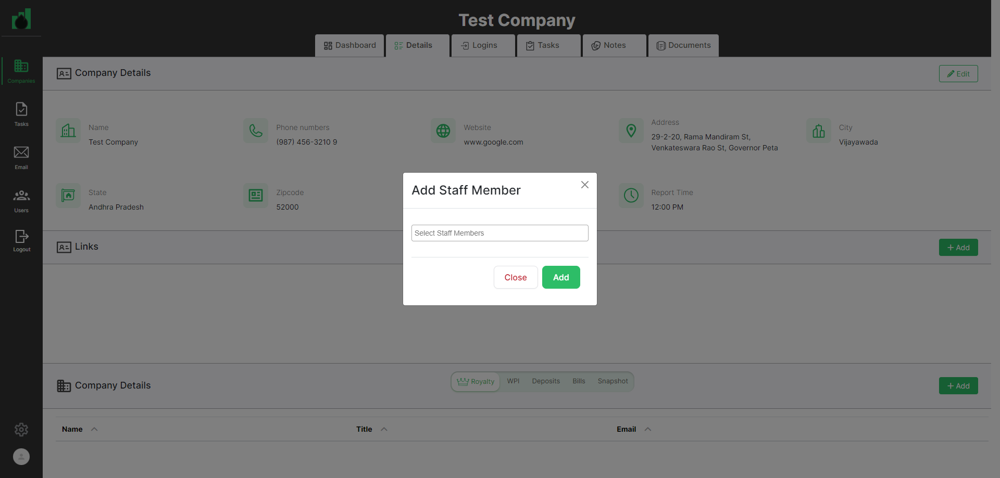Fail142. user should be able edit staff memberGiven User has already logged in to applicationusername password admin@ontrack.com Admin@12345 And User is on Companies page url "https://beta.cisin.com:4991/"When user should be able to select company in the company pageAnd user should be clicked on Details TabAnd user should be click on edit button staff member sectionAnd user should be able update staff detailstitle bdate date Admin1 February 13, 2024 January 6, 2024 Step skippedThen updated staff member details should be displayed on staff detail section"Testing 201"Step skippedAppHooks.ApplicationHooks.tearDown(io.cucumber.java.Scenario)142._user_should_be_able_edit_staff_member Fail143. user should be able delete staff member detailsGiven User has already logged in to application
Fail143. user should be able delete staff member detailsGiven User has already logged in to applicationusername password admin@ontrack.com Admin@12345 And User is on Companies page url "https://beta.cisin.com:4991/"When user should be able to select company in the company pageAnd user should be clicked on Details TabAnd user able to delete staff member detailsAppHooks.ApplicationHooks.tearDown(io.cucumber.java.Scenario)143._user_should_be_able_delete_staff_member_details Pass144. user should be able to add notesGiven User has already logged in to application
Pass144. user should be able to add notesGiven User has already logged in to applicationusername password admin@ontrack.com Admin@12345 And User is on Companies page url "https://beta.cisin.com:4991/"When user should be able to select company in the company pageAnd user should be clicked on Details TabAnd user should be able to click on add button in the notes sectionAnd user should be enter all fields of notes popupsubject notes DEXT Automate Notes Then notes should be displayed in the notes section"Automate Notes"Pass145. user should be able to edit notesGiven User has already logged in to applicationusername password admin@ontrack.com Admin@12345 And User is on Companies page url "https://beta.cisin.com:4991/"When user should be able to select company in the company pageAnd user should be clicked on Details TabAnd user should be able to click on edit button in the notes sectionAnd user should be edit enter all fields of notes popup"AutomateNotes"Then updated notes should be displayed in the notes section"AutomateNotes"Pass146. user should be able delete notesGiven User has already logged in to applicationusername password admin@ontrack.com Admin@12345 And User is on Companies page url "https://beta.cisin.com:4991/"When user should be able to select company in the company pageAnd user should be clicked on Details TabAnd user able to delete notesPass147. user should be on the logins pageGiven User has already logged in to applicationusername password admin@ontrack.com Admin@12345 And User is on Companies page url "https://beta.cisin.com:4991/"When user should be able to select company in the company pageAnd user should be on logins pageThen user should check url of the page "Logins"Pass148. user should be get errormsg on website fieldGiven User has already logged in to applicationusername password admin@ontrack.com Admin@12345 And User is on Companies page url "https://beta.cisin.com:4991/"When user should be able to select company in the company pageAnd user should be on logins pageAnd user should be click on Add logins buttonAnd user should be able to add button on login popupThen user should be get errormsg on website field "Website can't be blank."Pass149. user should be get errormsg on userid fieldGiven User has already logged in to applicationusername password admin@ontrack.com Admin@12345 And User is on Companies page url "https://beta.cisin.com:4991/"When user should be able to select company in the company pageAnd user should be on logins pageAnd user should be click on Add logins buttonAnd user should be able to add button on login popupThen user should be get errormsg on name field "Name can't be blank."Pass150. user should be able to add loginsGiven User has already logged in to applicationusername password admin@ontrack.com Admin@12345 And User is on Companies page url "https://beta.cisin.com:4991/"When user should be able to select company in the company pageAnd user should be on logins pageAnd user should be click on Add logins buttonAnd user should be add loginsname website companycode password notes accountnumber securityques answer admin@ontrack.com www.google.com 12 Admin@12345 New login 235647891 Test1 test Then user should see the logins detials"Admin@ontrack.com"Pass151. user should be able to update logins detailsGiven User has already logged in to applicationusername password admin@ontrack.com Admin@12345 And User is on Companies page url "https://beta.cisin.com:4991/"When user should be able to select company in the company pageAnd user should be on logins pageAnd user should be click on edit button on logins listAnd user should be able to update logins detailsname website companycode notes accountnumber securityques answer Admin Automate www.yahoo.com 1 New 0123456789 Test2 testautomate Then user should see the edit logins detials"Admin Automate"Pass152. user should be able to delete security ques in the logins detailsGiven User has already logged in to applicationusername password admin@ontrack.com Admin@12345 And User is on Companies page url "https://beta.cisin.com:4991/"When user should be able to select company in the company pageAnd user should be on logins pageAnd user should be click on edit button on logins listAnd user should be able to delete security ques in the logins detailsThen user should see the edit logins detials after delete security ques in the logins details"Admin Automate"Pass153. user should be able delete loginsGiven User has already logged in to applicationusername password admin@ontrack.com Admin@12345 And User is on Companies page url "https://beta.cisin.com:4991/"When user should be able to select company in the company pageAnd user should be on logins pageThen user should be able delete loginsPass154. user should be on the Tasks pageGiven User has already logged in to applicationusername password admin@ontrack.com Admin@12345 And User is on Companies page url "https://beta.cisin.com:4991/"When user should be able to select company in the company pageAnd user should be on tasks pageThen user should check url of the tasks page "Tasks"Pass155. user should be get errormsg on task name field at add task popupGiven User has already logged in to applicationusername password admin@ontrack.com Admin@12345 And User is on Companies page url "https://beta.cisin.com:4991/"When user should be able to select company in the company pageAnd user should be on tasks pageAnd user should be click on Add tasks button in the tasks pageAnd user should be able to add button on tasks popupThen user should be get errormsg on task name field "Task name can't be blank."Pass156. user should be get errormsg on asigned to field at add task popupGiven User has already logged in to applicationusername password admin@ontrack.com Admin@12345 And User is on Companies page url "https://beta.cisin.com:4991/"When user should be able to select company in the company pageAnd user should be on tasks pageAnd user should be click on Add tasks button in the tasks pageAnd user should be able to add button on tasks popupThen user should be get errormsg on asigned to field "Assigned to can't be blank"Pass157. user should be get errormsg on client field at add task popupGiven User has already logged in to applicationusername password admin@ontrack.com Admin@12345 And User is on Companies page url "https://beta.cisin.com:4991/"When user should be able to select company in the company pageAnd user should be on tasks pageAnd user should be click on Add tasks button in the tasks pageAnd user should be able to add button on tasks popupThen user should be get errormsg on client field "Client must exist"Pass158. user should be get errormsg on start date field in the add task popupGiven User has already logged in to applicationusername password admin@ontrack.com Admin@12345 And User is on Companies page url "https://beta.cisin.com:4991/"When user should be able to select company in the company pageAnd user should be on tasks pageAnd user should be click on Add tasks button in the tasks pageAnd user should be able to add button on tasks popupThen user should be get errormsg on start date field "Start date can't be blank."Pass159. user should be able to create task template in the tasks pageGiven User has already logged in to applicationusername password admin@ontrack.com Admin@12345 And User is on Companies page url "https://beta.cisin.com:4991/"When user should be click on Tasks at sidebar menu for the company taskAnd user should be click on tasks template tab for the company taskAnd user should be click on create template button for the compnay taskAnd user should be enter the "Qa automation template" in the name field at add task template pop up for the compnay taskAnd user should be click on add button of task template popup for the company taskFail160. user should be able to create task in the compnay task pageGiven User has already logged in to applicationusername password admin@ontrack.com Admin@12345 And User is on Companies page url "https://beta.cisin.com:4991/"When user should be able to select company in the company pageAnd user should be on tasks pageAnd user should be click on Add tasks button in the tasks pageAnd user should be able to create task in the tasks pagetask template name assign company taskrepeat date Qa automation template Task12 Testing 201 Test Company 1 February 20, 2024 Then user should be see the task in the tasks page"Feb 26 | Task12"Step skippedAppHooks.ApplicationHooks.tearDown(io.cucumber.java.Scenario)160._user_should_be_able_to_create_task_in_the_compnay_task_page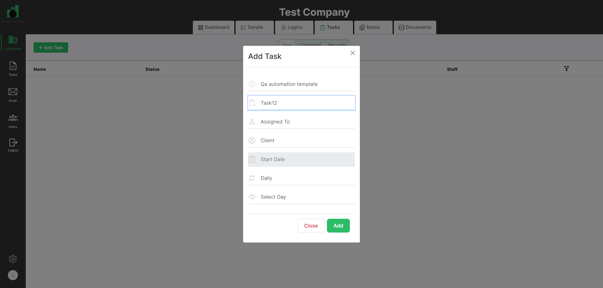Fail161. user should be on task pageGiven User has already logged in to applicationusername password admin@ontrack.com Admin@12345 And User is on Companies page url "https://beta.cisin.com:4991/"When user should be able to select company in the company pageAnd user should be on tasks pageAnd user should be able to click on task in the tasks pageThen user should be on task pageStep skippedAppHooks.ApplicationHooks.tearDown(io.cucumber.java.Scenario)161._user_should_be_on_task_page Fail162. validate user should be able to see company details on detail tabGiven User has already logged in to application
Fail162. validate user should be able to see company details on detail tabGiven User has already logged in to applicationusername password admin@ontrack.com Admin@12345 And User is on Companies page url "https://beta.cisin.com:4991/"When user should be able to select company in the company pageAnd user should be on tasks pageAnd user should be able to click on task in the tasks pageAnd user should be able to click on client link on a taskStep skippedThen user should be able to see company details on detail tab"Test Company"Step skippedAppHooks.ApplicationHooks.tearDown(io.cucumber.java.Scenario)162._validate_user_should_be_able_to_see_company_details_on_detail_tab Fail163. validate user should be able to see user details on detail tabGiven User has already logged in to application
Fail163. validate user should be able to see user details on detail tabGiven User has already logged in to applicationusername password admin@ontrack.com Admin@12345 And User is on Companies page url "https://beta.cisin.com:4991/"When user should be able to select company in the company pageAnd user should be on tasks pageAnd user should be able to click on task in the tasks pageAnd user should be able to click on assignee link on a taskStep skippedThen user should be able to see user details on detail tab"Testing 201"Step skippedAppHooks.ApplicationHooks.tearDown(io.cucumber.java.Scenario)163._validate_user_should_be_able_to_see_user_details_on_detail_tab Fail164. user should be able to add staff member for the notes in the Task tabGiven User has already logged in to application
Fail164. user should be able to add staff member for the notes in the Task tabGiven User has already logged in to applicationusername password admin@ontrack.com Admin@12345 And User is on Companies page url "https://beta.cisin.com:4991/"When user should be able to select company in the company pageAnd user should be clicked on Details TabAnd user should be click on add button staff member sectionAnd user should be able add staff details"Testing 201"Then staff member details should be displayed on staff detail section"Testing 201"Step skippedAppHooks.ApplicationHooks.tearDown(io.cucumber.java.Scenario)164._user_should_be_able_to_add_staff_member_for_the_notes_in_the_Task_tabFail165. user should be able to add notes in the task tabGiven User has already logged in to applicationusername password admin@ontrack.com Admin@12345 And User is on Companies page url "https://beta.cisin.com:4991/"When user should be able to select company in the company pageAnd user should be on tasks pageAnd user should be able to click on task in the tasks pageAnd user should be add notes in the task tabassign subnotes notedetail Testing 201 Test Hello Step skippedThen Notes should be displayed in the notestabStep skippedAppHooks.ApplicationHooks.tearDown(io.cucumber.java.Scenario)165._user_should_be_able_to_add_notes_in_the_task_tab Fail166. user should be able to add coachings in the notes of Task tabGiven User has already logged in to application
Fail166. user should be able to add coachings in the notes of Task tabGiven User has already logged in to applicationusername password admin@ontrack.com Admin@12345 And User is on Companies page url "https://beta.cisin.com:4991/"When user should be able to select company in the company pageAnd user should be on tasks pageAnd user should be able to click on task in the tasks pageAnd user should be add coachings in the notes of Task tabassign subnotes notedetail Testing 201 Test Hello Step skippedThen coachings should be displayed in the notestabStep skippedAppHooks.ApplicationHooks.tearDown(io.cucumber.java.Scenario)166._user_should_be_able_to_add_coachings_in_the_notes_of_Task_tab Fail167. user should be able to add sections in the task pageGiven User has already logged in to application
Fail167. user should be able to add sections in the task pageGiven User has already logged in to applicationusername password admin@ontrack.com Admin@12345 And User is on Companies page url "https://beta.cisin.com:4991/"When user should be able to select company in the company pageAnd user should be on tasks pageAnd user should be able to click on task in the tasks pageAnd user should be able to add sections in the task page "TASK01"Step skippedThen Sections should be displayed on task pageStep skippedAppHooks.ApplicationHooks.tearDown(io.cucumber.java.Scenario)167._user_should_be_able_to_add_sections_in_the_task_pageFail168. User should be create subtask of task in the task pageGiven User has already logged in to applicationusername password admin@ontrack.com Admin@12345 And User is on Companies page url "https://beta.cisin.com:4991/"When user should be able to select company in the company pageAnd user should be on tasks pageAnd user should be able to click on task in the tasks pageAnd User should be create subtask of task in the task page"Task01-01"Step skippedThen user should be able to see the subtask of the task"Task01-01"Step skippedAppHooks.ApplicationHooks.tearDown(io.cucumber.java.Scenario)168._User_should_be_create_subtask_of_task_in_the_task_page Fail169. User should be able to see completed task in the task pageGiven User has already logged in to application
Fail169. User should be able to see completed task in the task pageGiven User has already logged in to applicationusername password admin@ontrack.com Admin@12345 And User is on Companies page url "https://beta.cisin.com:4991/"When user should be able to select company in the company pageAnd user should be on tasks pageAnd user should be able to click on task in the tasks pageAnd user should be able to complete taskStep skippedThen User should be able to see completed task in the task page"Feb 26 | Task12"Step skippedAppHooks.ApplicationHooks.tearDown(io.cucumber.java.Scenario)169._User_should_be_able_to_see_completed_task_in_the_task_page Fail170. User should be delete task at complete task in the tasks pageGiven User has already logged in to application
Fail170. User should be delete task at complete task in the tasks pageGiven User has already logged in to applicationusername password admin@ontrack.com Admin@12345 And User is on Companies page url "https://beta.cisin.com:4991/"When user should be able to select company in the company pageAnd user should be on tasks pageAnd User should be delete task at complete task in the tasks pageAppHooks.ApplicationHooks.tearDown(io.cucumber.java.Scenario)170._User_should_be_delete_task_at_complete_task_in_the_tasks_page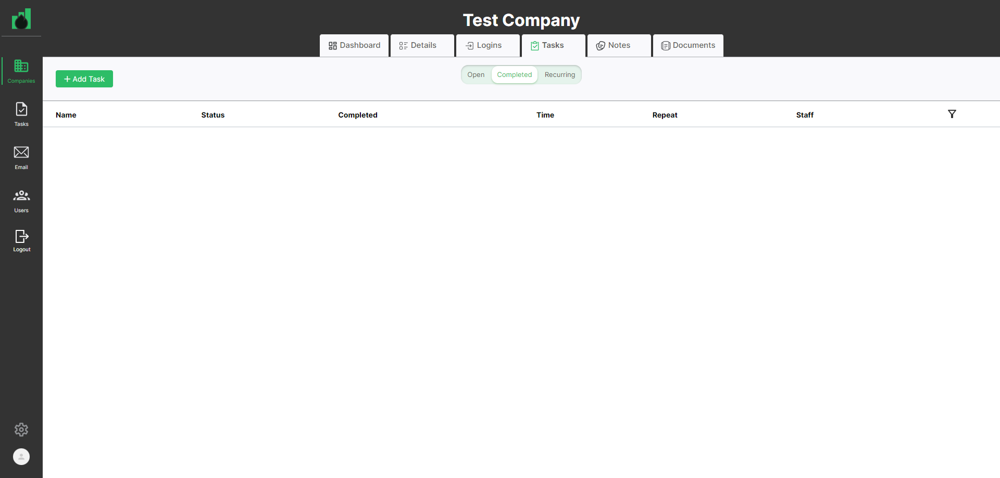Fail171. user should be able to create task in the compnay task pageGiven User has already logged in to applicationusername password admin@ontrack.com Admin@12345 And User is on Companies page url "https://beta.cisin.com:4991/"When user should be able to select company in the company pageAnd user should be on tasks pageAnd user should be click on Add tasks button in the tasks pageAnd user should be able to create task in the tasks pagetask template name assign company taskrepeat date Qa automation template Task12 Testing 201 Test Company 1 February 20, 2024 Then user should be see the task in the tasks page"Feb 26 | Task12"Step skippedAppHooks.ApplicationHooks.tearDown(io.cucumber.java.Scenario)171._user_should_be_able_to_create_task_in_the_compnay_task_page Fail172. user should be able to create task in the tasks pageGiven User has already logged in to application
Fail172. user should be able to create task in the tasks pageGiven User has already logged in to applicationusername password admin@ontrack.com Admin@12345 And User is on Companies page url "https://beta.cisin.com:4991/"When user should be able to select company in the company pageThen user should be should open task widget count"1"AppHooks.ApplicationHooks.tearDown(io.cucumber.java.Scenario)172._user_should_be_able_to_create_task_in_the_tasks_page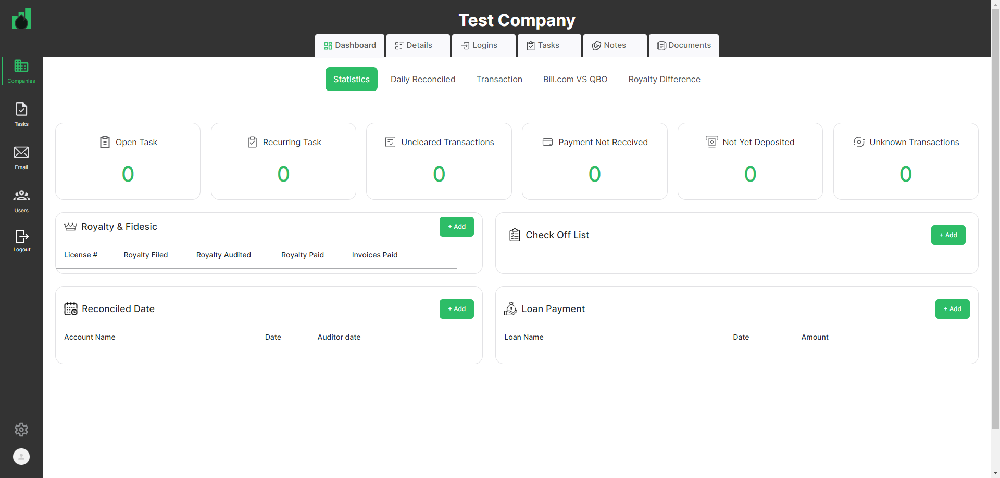Fail173. User should be delete task in the tasks pageGiven User has already logged in to applicationusername password admin@ontrack.com Admin@12345 And User is on Companies page url "https://beta.cisin.com:4991/"When user should be able to select company in the company pageAnd user should be on tasks pageAnd user should be click on delete btn tasks button in the tasks pageAppHooks.ApplicationHooks.tearDown(io.cucumber.java.Scenario)173._User_should_be_delete_task_in_the_tasks_page Pass174. user should be able to create task in the tasks pageGiven User has already logged in to application
Pass174. user should be able to create task in the tasks pageGiven User has already logged in to applicationusername password admin@ontrack.com Admin@12345 And User is on Companies page url "https://beta.cisin.com:4991/"When user should be able to select company in the company pageThen user should be should open task widget count"0"Fail175. User should be delete task in task recurring tab in the tasks pageGiven User has already logged in to applicationusername password admin@ontrack.com Admin@12345 And User is on Companies page url "https://beta.cisin.com:4991/"When user should be able to select company in the company pageAnd user should be on tasks pageAnd user should be click on delete btn in task recurring tab in the tasks pageAppHooks.ApplicationHooks.tearDown(io.cucumber.java.Scenario)175._User_should_be_delete_task_in_task_recurring_tab_in_the_tasks_page Fail176. user should be able to create task in the compnay task pageGiven User has already logged in to application
Fail176. user should be able to create task in the compnay task pageGiven User has already logged in to applicationusername password admin@ontrack.com Admin@12345 And User is on Companies page url "https://beta.cisin.com:4991/"When user should be able to select company in the company pageAnd user should be on tasks pageAnd user should be click on Add tasks button at recurring tab in the tasks pageAnd user should be able to create task at task recurring in the tasks pagetask template name assign company taskrepeat date Qa automation template Task12 Testing 201 Test Company 1 February 20, 2024 Step skippedThen user should be see the task at task recurring tab in the tasks page"Task12"Step skippedAppHooks.ApplicationHooks.tearDown(io.cucumber.java.Scenario)176._user_should_be_able_to_create_task_in_the_compnay_task_page Fail177. user should be able to update task in the compnay task pageGiven User has already logged in to application
Fail177. user should be able to update task in the compnay task pageGiven User has already logged in to applicationusername password admin@ontrack.com Admin@12345 And User is on Companies page url "https://beta.cisin.com:4991/"When user should be able to select company in the company pageAnd user should be on tasks pageAnd user should be click on edit button on task recurring tabAnd user should be able to update task at task recurring in the tasks pagename assign taskrepeat date Task20 Testing 201 1 February 20, 2024 Step skippedThen user should be see the Update task at task recurring tab in the tasks page"Task20"Step skippedAppHooks.ApplicationHooks.tearDown(io.cucumber.java.Scenario)177._user_should_be_able_to_update_task_in_the_compnay_task_page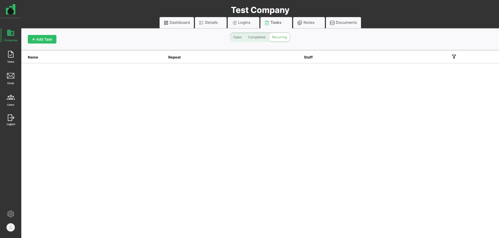Fail178. user should be able to create task in the tasks pageGiven User has already logged in to applicationusername password admin@ontrack.com Admin@12345 And User is on Companies page url "https://beta.cisin.com:4991/"When user should be able to select company in the company pageThen user should be should recurring task widget count"2"AppHooks.ApplicationHooks.tearDown(io.cucumber.java.Scenario)178._user_should_be_able_to_create_task_in_the_tasks_pageFail179. User should be able to update fields at recurring tab in the company task tabGiven User has already logged in to applicationusername password admin@ontrack.com Admin@12345 And User is on Companies page url "https://beta.cisin.com:4991/"When user should be able to select company in the company pageAnd user should be on tasks pageAnd user should be able to click on task of the company at tasks reoccurring page Task20And User should be able to update fields at recurring tab in the company task tab for task tabtaskname template date Task21 Qa automation template February 29, 2024 Step skippedThen user should be able to see the task recurring tab in the company task tab for task tab"Task21"Step skippedAppHooks.ApplicationHooks.tearDown(io.cucumber.java.Scenario)179._User_should_be_able_to_update_fields_at_recurring_tab_in_the__company_task_tabFail180. User should be delete task in task recurring tab in the tasks pageGiven User has already logged in to applicationusername password admin@ontrack.com Admin@12345 And User is on Companies page url "https://beta.cisin.com:4991/"When user should be able to select company in the company pageAnd user should be on tasks pageAnd user should be click on delete btn in task recurring tab in the tasks pageAppHooks.ApplicationHooks.tearDown(io.cucumber.java.Scenario)180._User_should_be_delete_task_in_task_recurring_tab_in_the_tasks_page Fail181. user should be able to create task in the tasks pageGiven User has already logged in to application
Fail181. user should be able to create task in the tasks pageGiven User has already logged in to applicationusername password admin@ontrack.com Admin@12345 And User is on Companies page url "https://beta.cisin.com:4991/"When user should be able to select company in the company pageThen user should be should recurring task widget count"1"AppHooks.ApplicationHooks.tearDown(io.cucumber.java.Scenario)181._user_should_be_able_to_create_task_in_the_tasks_pagePass182. Validate that user is able to Delete the template from delete button which is inside the template for the company taskGiven User has already logged in to applicationusername password admin@ontrack.com Admin@12345 And User is on Companies page url "https://beta.cisin.com:4991/"When user should be click on Tasks at sidebar menu for the company taskAnd user should be click on tasks template tab for the company taskAnd user should click on delete button at the QA Automation Template Page to delete the template for the compnay taskPass183. validate user should be on company notes pageGiven User has already logged in to applicationusername password admin@ontrack.com Admin@12345 And User is on Companies page url "https://beta.cisin.com:4991/"When user should be able to select company in the company pageAnd user should be able to click on company notes tabThen user should be on company notes page"Notes"Pass184. validate user should be able to see the add notes popupGiven User has already logged in to applicationusername password admin@ontrack.com Admin@12345 And User is on Companies page url "https://beta.cisin.com:4991/"When user should be able to select company in the company pageAnd user should be able to click on company notes tabAnd user should be able to click on add notes button in the company notes tabThen user should be able to see the add notes popupPass185. validate user should be able to close the add notes popupGiven User has already logged in to applicationusername password admin@ontrack.com Admin@12345 And User is on Companies page url "https://beta.cisin.com:4991/"When user should be able to select company in the company pageAnd user should be able to click on company notes tabAnd user should be able to click on add notes button in the company notes tabAnd user should be able to click on reset button at add notes popupThen user should be able to close the add notes popupPass186. user should be able to see the error on Assign To field at add notes popupGiven User has already logged in to applicationusername password admin@ontrack.com Admin@12345 And User is on Companies page url "https://beta.cisin.com:4991/"When user should be able to select company in the company pageAnd user should be able to click on company notes tabAnd user should be able to click on add notes button in the company notes tabAnd user should be able to click on add button at add notes popupThen user should be able to see the error on Assign To field "Assigned to can't be blank."Fail187. user should be able to create notes in the company notes pageGiven User has already logged in to applicationusername password admin@ontrack.com Admin@12345 And User is on Companies page url "https://beta.cisin.com:4991/"When user should be able to select company in the company pageAnd user should be able to click on company notes tabAnd user should be able to click on add notes button in the company notes tabAnd user should be able to create notes in the company notes pageassign subject notes Testing 201 work important task Then user should be see the notes at company notes pageStep skippedAppHooks.ApplicationHooks.tearDown(io.cucumber.java.Scenario)187._user_should_be_able_to_create_notes_in_the_company_notes_pageFail188. validate user should be able to reply the notes in the company notes pageGiven User has already logged in to applicationusername password admin@ontrack.com Admin@12345 And User is on Companies page url "https://beta.cisin.com:4991/"When user should be able to select company in the company pageAnd user should be able to click on company notes tabAnd user should be able to reply the notes in the company notes pageThen user should be able to see the reply of the notes"Testing Notes"Step skippedAppHooks.ApplicationHooks.tearDown(io.cucumber.java.Scenario)188._validate_user_should_be_able_to_reply_the_notes_in_the_company_notes_page Fail189. validate user should be able to edit reply notes in the company notes pageGiven User has already logged in to application
Fail189. validate user should be able to edit reply notes in the company notes pageGiven User has already logged in to applicationusername password admin@ontrack.com Admin@12345 And User is on Companies page url "https://beta.cisin.com:4991/"When user should be able to select company in the company pageAnd user should be able to click on company notes tabAnd user should be able to edit reply the notes in the company notes pageThen user should be able to see the edit reply of the notes"TestingNotes"Step skippedAppHooks.ApplicationHooks.tearDown(io.cucumber.java.Scenario)189._validate_user_should_be_able_to_edit_reply_notes_in_the_company_notes_pageFail190. validate user should be able to delete reply notes in the company notes pageGiven User has already logged in to applicationusername password admin@ontrack.com Admin@12345 And User is on Companies page url "https://beta.cisin.com:4991/"When user should be able to select company in the company pageAnd user should be able to click on company notes tabAnd user should be able to delete reply the notes in the company notes pageThen user should be able to delete reply successfully of the notes"Reply was deleted successfully"Step skippedAppHooks.ApplicationHooks.tearDown(io.cucumber.java.Scenario)190._validate_user_should_be_able_to_delete_reply_notes_in_the_company_notes_pageFail191. user should be able to create Coaching notes in the company notes pageGiven User has already logged in to applicationusername password admin@ontrack.com Admin@12345 And User is on Companies page url "https://beta.cisin.com:4991/"When user should be able to select company in the company pageAnd user should be able to click on company notes tabAnd user should be able to click on add notes button in the company notes tabAnd user should be able to create coaching notes in the company notes pageassign subject notes Testing 201 work important task Then user should be see the coaching notes at company notes pageStep skippedAppHooks.ApplicationHooks.tearDown(io.cucumber.java.Scenario)191._user_should_be_able_to_create_Coaching_notes_in_the_company_notes_page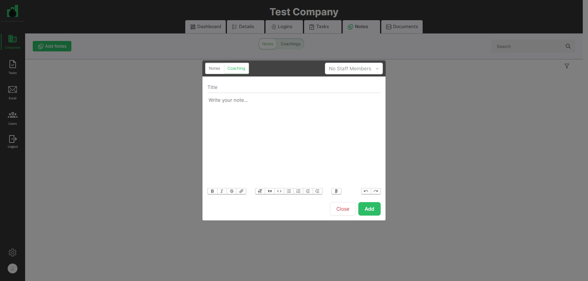Pass192. user should be able to see the coaching notes at company notes pageGiven User has already logged in to applicationusername password admin@ontrack.com Admin@12345 And User is on Companies page url "https://beta.cisin.com:4991/"When user should be able to select company in the company pageAnd user should be able to click on company notes tabAnd user should be able to click on coaching tab in the company notes tabThen user should be able to see the coaching notes at company notes pageFail193. validate user should be able to reply the notes of coaching tab in the company notes pageGiven User has already logged in to applicationusername password admin@ontrack.com Admin@12345 And User is on Companies page url "https://beta.cisin.com:4991/"When user should be able to select company in the company pageAnd user should be able to click on coaching tab company notes tabAnd user should be able to reply the notes of coaching tab in the company notes pageThen user should be able to see the reply on coaching tab of the notes"Testing Notes"Step skippedAppHooks.ApplicationHooks.tearDown(io.cucumber.java.Scenario)193._validate_user_should_be_able_to_reply_the_notes_of_coaching_tab_in_the_company_notes_page Fail194. validate user should be able to edit reply notes coaching in the company notes pageGiven User has already logged in to application
Fail194. validate user should be able to edit reply notes coaching in the company notes pageGiven User has already logged in to applicationusername password admin@ontrack.com Admin@12345 And User is on Companies page url "https://beta.cisin.com:4991/"When user should be able to select company in the company pageAnd user should be able to click on coaching tab company notes tabAnd user should be able to edit reply the notes Coaching in the company notes pageThen user should be able to see the edit reply of the notes Coaching"TestingNotes"Step skippedAppHooks.ApplicationHooks.tearDown(io.cucumber.java.Scenario)194._validate_user_should_be_able_to_edit_reply_notes_coaching_in_the_company_notes_page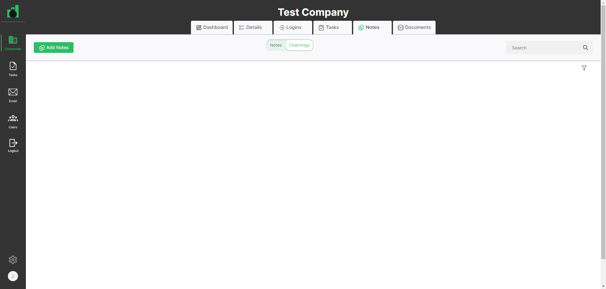Fail195. validate user should be able to delete reply notes in the company notes pageGiven User has already logged in to applicationusername password admin@ontrack.com Admin@12345 And User is on Companies page url "https://beta.cisin.com:4991/"When user should be able to select company in the company pageAnd user should be able to click on coaching tab company notes tabAnd user should be able to delete reply the notes coaching in the company notes pageThen user should be able to delete reply successfully of the notes coaching"Reply was deleted successfully"Step skippedAppHooks.ApplicationHooks.tearDown(io.cucumber.java.Scenario)195._validate_user_should_be_able_to_delete_reply_notes_in_the_company_notes_pageFail196. user should be able to search notes at company notes pageGiven User has already logged in to applicationusername password admin@ontrack.com Admin@12345 And User is on Companies page url "https://beta.cisin.com:4991/"When user should be able to select company in the company pageAnd user should be able to click on company notes tabAnd user should be able to text in the search field at company notes page"work"Then user should be able to see search notes at company notes pageAppHooks.ApplicationHooks.tearDown(io.cucumber.java.Scenario)196._user_should_be_able_to_search_notes_at_company_notes_pageFail197. user should be able to search notes by filter at company notes pageGiven User has already logged in to applicationusername password admin@ontrack.com Admin@12345 And User is on Companies page url "https://beta.cisin.com:4991/"When user should be able to select company in the company pageAnd user should be able to click on company notes tabAnd user should be able to search notes by filter at company notes pageThen user should be able to see search notes by filter at company notes pageStep skippedAppHooks.ApplicationHooks.tearDown(io.cucumber.java.Scenario)197._user_should_be_able_to_search_notes_by_filter_at_company_notes_page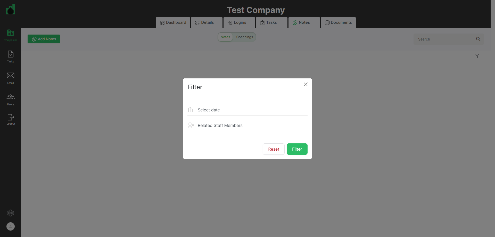Pass198. user should be able to reset filter at company notes pageGiven User has already logged in to applicationusername password admin@ontrack.com Admin@12345 And User is on Companies page url "https://beta.cisin.com:4991/"When user should be able to select company in the company pageAnd user should be able to click on company notes tabAnd user should be able to reset filter at company notes pageThen user should be able to see all notes at company notes pageFail199. user should be able delete staff member detailsGiven User has already logged in to applicationusername password admin@ontrack.com Admin@12345 And User is on Companies page url "https://beta.cisin.com:4991/"When user should be able to select company in the company pageAnd user should be clicked on Details TabAnd user able to delete staff member detailsAppHooks.ApplicationHooks.tearDown(io.cucumber.java.Scenario)199._user_should_be_able_delete_staff_member_details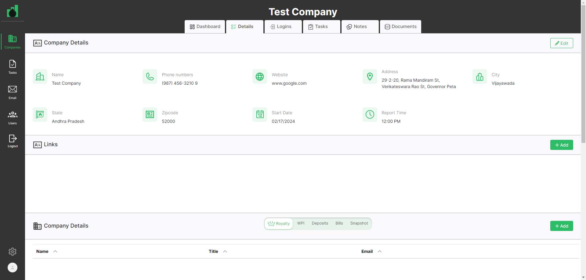Pass200. user should be on the document pageGiven User has already logged in to applicationusername password admin@ontrack.com Admin@12345 And User is on Companies page url "https://beta.cisin.com:4991/"When user should be able to select company in the company pageAnd user should be able to click on document pageThen user should be on the document page"Documents"Pass201. user should be able to create folder in the documentGiven User has already logged in to applicationusername password admin@ontrack.com Admin@12345 And User is on Companies page url "https://beta.cisin.com:4991/"When user should be able to select company in the company pageAnd user should be able to click on document pageAnd user should be able to create folder in the document"Automate Folder"Then user should be able to see the folder in the document page"Automate Folder"Pass202. user should able to edit folder name in the document pageGiven User has already logged in to applicationusername password admin@ontrack.com Admin@12345 And User is on Companies page url "https://beta.cisin.com:4991/"When user should be able to select company in the company pageAnd user should be able to click on document pageAnd user should be able to click on edit button in the document pageAnd user should be able to update folder name in the document page"ImportantDoc"Then user should be able to see the updated name of folder in the document page"ImportantDoc"When user should be able to click on edit button in the document pageAnd user should be able to change the folder name in the document page"Text"Pass203. User should be able to validate document name at upload documents popup in the folder of document pageGiven User has already logged in to applicationusername password admin@ontrack.com Admin@12345 And User is on Companies page url "https://beta.cisin.com:4991/"When user should be able to select company in the company pageAnd user should be able to click on document pageAnd user should be able to click on folder of document pageThen user should be able to validate document name at upload documents popup in the folder of document page "Name can't be blank."Pass204. User should be able to upload document in the folder of document pageGiven User has already logged in to applicationusername password admin@ontrack.com Admin@12345 And User is on Companies page url "https://beta.cisin.com:4991/"When user should be able to select company in the company pageAnd user should be able to click on document pageAnd user should be able to click on folder of document pageAnd User should be able to upload document in the folder of document page"Document1"Then user should be able to see the upload document in the document folder"Document1"Pass205. User should be able to search document in the folder of document pageGiven User has already logged in to applicationusername password admin@ontrack.com Admin@12345 And User is on Companies page url "https://beta.cisin.com:4991/"When user should be able to select company in the company pageAnd user should be able to click on document pageAnd user should be able to click on folder of document pageAnd User should be able to upload document in the folder of document page for search"Document2"And User should be able to search document in the folder of document page"Document2"Then user should be able to see the search document in the document folder"Document2"Pass206. User should be able to edit document in the folder of document pageGiven User has already logged in to applicationusername password admin@ontrack.com Admin@12345 And User is on Companies page url "https://beta.cisin.com:4991/"When user should be able to select company in the company pageAnd user should be able to click on document pageAnd user should be able to click on folder of document pageAnd User should be able to edit document in the folder of document page"Document"Then user should be able to see the updated document in the document folder"Document"Pass207. User should be able to delete document in the folder of document pageGiven User has already logged in to applicationusername password admin@ontrack.com Admin@12345 And User is on Companies page url "https://beta.cisin.com:4991/"When user should be able to select company in the company pageAnd user should be able to click on document pageAnd user should be able to click on folder of document pageAnd User should be able to delete document in the folder of document pagePass208. Validate user should be able to click on logo in sidebar and navigates to companies list pageGiven User has already logged in to applicationusername password admin@ontrack.com Admin@12345 And User is on Companies page url "https://beta.cisin.com:4991/"When user should be able to select company in the company pageAnd user should be able to click on document pageAnd user should be click on logo in sidebarThen user should be navigate to companies list page"https://beta.cisin.com:4991/companies"Pass208. Validate user should be able to click on profile in sidebar and navigates to user profileGiven User has already logged in to applicationusername password admin@ontrack.com Admin@12345 And User is on Companies page url "https://beta.cisin.com:4991/"When user should be able to select company in the company pageAnd user should be able to click on document pageAnd user should be click on profile in sidebarThen user should be able to navigate to user profile"Test admin" -
Contact Page Functionality
9:53:35 pm / 00:05:04:687 Fail
Contact Page Functionality
02.21.2024 9:53:35 pm 02.21.2024 9:58:40 pm 00:05:04:687 · #test-id=2,256PassContact 1. Contact page tab is clickableGiven User has already logged in to application for contact pageusername password admin@ontrack.com Admin@12345 And User is on Companies page url for contact page "https://beta.cisin.com:4991/"When user should be able to click on contact tabThen User is on Contact page url "https://beta.cisin.com:4991/contacts"PassContact 2. Admin Email is displayedGiven User has already logged in to application for contact pageusername password admin@ontrack.com Admin@12345 And User is on Companies page url for contact page "https://beta.cisin.com:4991/"When user should be able to click on contact tabThen Admin Email is displayedPassConatct 3. Add Contact Button should be displayedGiven User has already logged in to application for contact pageusername password admin@ontrack.com Admin@12345 And User is on Companies page url for contact page "https://beta.cisin.com:4991/"When user should be able to click on contact tabThen Add Contact button should be displayedPassConatct 4. Searchbox should be displayedGiven User has already logged in to application for contact pageusername password admin@ontrack.com Admin@12345 And User is on Companies page url for contact page "https://beta.cisin.com:4991/"When user should be able to click on contact tabThen Searchbox field should be displayedPassContact 5. Edit Button should be displayedGiven User has already logged in to application for contact pageusername password admin@ontrack.com Admin@12345 And User is on Companies page url for contact page "https://beta.cisin.com:4991/"When user should be able to click on contact tabThen Edit button should be displayedPassContact 6. Contact list should be displayedGiven User has already logged in to application for contact pageusername password admin@ontrack.com Admin@12345 And User is on Companies page url for contact page "https://beta.cisin.com:4991/"When user should be able to click on contact tabThen Contact list should be displayedPassConatct 7. Contact list should be displayedGiven User has already logged in to application for contact pageusername password admin@ontrack.com Admin@12345 And User is on Companies page url for contact page "https://beta.cisin.com:4991/"When user should be able to click on contact tabThen Contact list should be displayedPassContact 8. User details should be displayedGiven User has already logged in to application for contact pageusername password admin@ontrack.com Admin@12345 And User is on Companies page url for contact page "https://beta.cisin.com:4991/"When user should be able to click on contact tabThen User details should be displayedPassContact 9. Upload photo Button should be displayedGiven User has already logged in to application for contact pageusername password admin@ontrack.com Admin@12345 And User is on Companies page url for contact page "https://beta.cisin.com:4991/"When user should be able to click on contact tabThen Upload photo button should be displayedPassContact 10. user should be able to close add contact popup.Given User has already logged in to application for contact pageusername password admin@ontrack.com Admin@12345 And User is on Companies page url for contact page "https://beta.cisin.com:4991/"When user should be able to click on contact tabAnd click on add contact button in the contact pageThen user should be able to close add contact popup successfullyPassContact 11. User should see an validation message for First NameGiven User has already logged in to application for contact pageusername password admin@ontrack.com Admin@12345 And User is on Companies page url for contact page "https://beta.cisin.com:4991/"When user should be able to click on contact tabAnd click on add contact button in the contact pageAnd User should be clicked on add button in the add contact popup of the contactThen User should see an validation message for First Name for contact"First name can't be blank."PassContact 12. User should see an validation message for Last NameGiven User has already logged in to application for contact pageusername password admin@ontrack.com Admin@12345 And User is on Companies page url for contact page "https://beta.cisin.com:4991/"When user should be able to click on contact tabAnd click on add contact button in the contact pageAnd User should be clicked on add button in the add contact popup of the contactThen User should see an validation message for Last Name for contact"Last name can't be blank."PassContact 13. User should see an validation message for Title NameGiven User has already logged in to application for contact pageusername password admin@ontrack.com Admin@12345 And User is on Companies page url for contact page "https://beta.cisin.com:4991/"When user should be able to click on contact tabAnd click on add contact button in the contact pageAnd User should be clicked on add button in the add contact popup of the contactThen User should see an validation message for Title Name for contact"Title must exist."FailContact 14. User should see an validation message for Phone Number NameGiven User has already logged in to application for contact pageusername password admin@ontrack.com Admin@12345 And User is on Companies page url for contact page "https://beta.cisin.com:4991/"When user should be able to click on contact tabAnd click on add contact button in the contact pageAnd User should be clicked on add button in the add contact popup of the contactThen User should see an validation message for Phone Number Name for contact"Phone number can't be blank."AppHooks.ApplicationHooks.tearDown(io.cucumber.java.Scenario)Contact_14._User_should_see_an_validation_message_for_Phone_Number_Name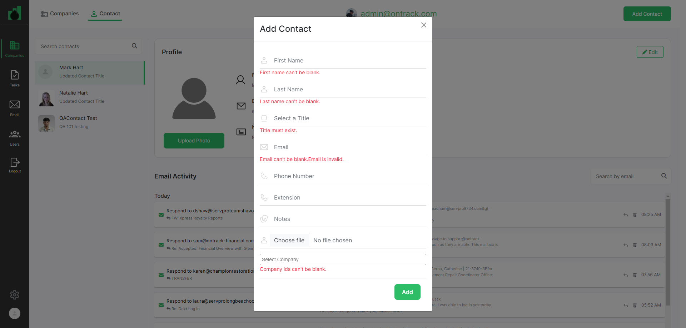PassContact 15. User should see an validation message for Company NameGiven User has already logged in to application for contact pageusername password admin@ontrack.com Admin@12345 And User is on Companies page url for contact page "https://beta.cisin.com:4991/"When user should be able to click on contact tabAnd click on add contact button in the contact pageAnd User should be clicked on add button in the add contact popup of the contactThen User should see an validation message for Company Name for contact"Company ids can't be blank."PassContact 16. validate user should be able to add contact in the contact pageGiven User has already logged in to application for contact pageusername password admin@ontrack.com Admin@12345 And User is on Companies page url for contact page "https://beta.cisin.com:4991/"When user should be able to click on contact tabAnd user should be click on add contact btn in the contact tabAnd user should be able to enter contact details in the contact popupfirstname lastname email phonenumber company Test Contact Automate@gmail.com 9856321047 Test Company Then user should be able to see contact in the contact page"Test Contact"PassContact 17. validate user should be able to search contactGiven User has already logged in to application for contact pageusername password admin@ontrack.com Admin@12345 And User is on Companies page url for contact page "https://beta.cisin.com:4991/"When user should be able to click on contact tabAnd user able to search the contact "Test Contact"Then user should be able to see contact in the contact page"Test Contact"PassContact 18. user should be able to edit contact at add contact popup.Given User has already logged in to application for contact pageusername password admin@ontrack.com Admin@12345 And User is on Companies page url for contact page "https://beta.cisin.com:4991/"When user should be able to click on contact tabAnd user click on edit button for the contactAnd user clear the filed and enter the updates values in the fields for the contactsSelect a Title Email company final check admin7758@mailinator.com Test Company And user click on update button at edit contact popupThen user should be able to see update contact details"contact1"PassContact 19. user should be able to delete contactGiven User has already logged in to application for contact pageusername password admin@ontrack.com Admin@12345 And User is on Companies page url for contact page "https://beta.cisin.com:4991/"When user should be able to click on contact tabAnd user click on edit button for the contactAnd click on delete button in the conatct popup -
Login Page Functionality
9:58:40 pm / 00:00:11:803 Pass
Login Page Functionality
02.21.2024 9:58:40 pm 02.21.2024 9:58:51 pm 00:00:11:803 · #test-id=2,446Pass1. Check login successfully with valid credentialsGiven I am on the OnTrack App Login PageGiven I have entered a valid "admin@ontrack.com" and "Admin@12345"When I click on Login buttonThen title shhould be "OnTrack"Pass2. Check Forget Your Password Link is being displayedGiven I am on the OnTrack App Login PageGiven I am on the OnTrack App Login PageThen forget your password link should be Displayed -
Settings Page Functionality
9:58:51 pm / 00:04:26:075 Fail
Settings Page Functionality
02.21.2024 9:58:51 pm 02.21.2024 10:03:18 pm 00:04:26:075 · #test-id=2,464PassSettings 1. user should be on settings pageGiven User has already logged in to application for settingsusername password admin@ontrack.com Admin@12345 When user should be able to click on SettingsThen user should be on settings page"Contact Title"PassSettings 2. User should see an validation message for Title fieled in the contact title widgetGiven User has already logged in to application for settingsusername password admin@ontrack.com Admin@12345 When user should be able to click on SettingsAnd click on add button in the contact title widgetAnd User should be clicked on add button in the title popup in the contact title widgetThen User should see an validation message for Title fieled in the contact title widget"Title can't be blank."PassSettings 3. User should be able to close add title popup for contact title widgetGiven User has already logged in to application for settingsusername password admin@ontrack.com Admin@12345 When user should be able to click on SettingsAnd click on add button in the contact title widgetAnd User should be able to close add title popup for contact title widgetThen close add title popup for contact title widget successfully"Contact Title"PassSetting 4. Validate user should be able to add title for contact title widgetGiven User has already logged in to application for settingsusername password admin@ontrack.com Admin@12345 When user should be able to click on SettingsAnd user should be able to click on add title button in contact title widgetAnd user should enter the title in add title popup of contact title widget"Automate Admin"Then user should be able to see the title on contact title widget"Automate Admin"PassSettings 5. User should be able to edit title for contact title widgetGiven User has already logged in to application for settingsusername password admin@ontrack.com Admin@12345 When user should be able to click on SettingsAnd User should be able to edit title for contact title widget"Auto Admin"Then user should be able to see contact title in the contact title widget"Auto Admin"PassSettings 6. User should be able to delete title for contact title widgetGiven User has already logged in to application for settingsusername password admin@ontrack.com Admin@12345 When user should be able to click on SettingsAnd User should be able to delete title in contact title widgetThen user should be able to delete contact title successfully in the contact title widget"Title was successfully deleted."PassSettings 7. User should see an validation message for Title fieled in the staff title widgetGiven User has already logged in to application for settingsusername password admin@ontrack.com Admin@12345 When user should be able to click on SettingsAnd click on add button in the staff title widgetAnd User should be clicked on add button in the title popup in the staff title widgetThen User should see an validation message for Title fieled in the staff title widget"Title can't be blank."PassSettings 8. User should be able to close add title popup for staff title widgetGiven User has already logged in to application for settingsusername password admin@ontrack.com Admin@12345 When user should be able to click on SettingsAnd click on add button in the staff title widgetAnd User should be able to close add title popup for staff title widgetThen close add title popup for staff title widget successfully"Staff Title"PassSetting 9. Validate user should be able to add title for staff title widgetGiven User has already logged in to application for settingsusername password admin@ontrack.com Admin@12345 When user should be able to click on SettingsAnd user should be able to click on add title button in staff title widgetAnd user should enter the title in add title popup of staff title widget"Automate Admin"Then user should be able to see the title on staff title widget"Automate Admin"PassSettings 10. User should be able to edit title for staff title widgetGiven User has already logged in to application for settingsusername password admin@ontrack.com Admin@12345 When user should be able to click on SettingsAnd User should be able to edit title for staff title widget"Auto Admin"Then user should be able to see staff title in the staff title widget"Auto Admin"PassSettings 11. User should be able to delete title for staff title widgetGiven User has already logged in to application for settingsusername password admin@ontrack.com Admin@12345 When user should be able to click on SettingsAnd User should be able to delete title in staff title widgetThen user should be able to delete contact title successfully in the staff title widget"Title was successfully deleted."FailSettings 12. User should be able to close add signature popup for email signature widgetGiven User has already logged in to application for settingsusername password admin@ontrack.com Admin@12345 When user should be able to click on SettingsAnd click on add button in the email signature widgetAnd User should be able to close add signature popup for email signature widgetStep skippedThen close add title popup for email signature widget successfully"Email Signature"Step skippedAppHooks.ApplicationHooks.tearDown(io.cucumber.java.Scenario)Settings_12._User_should_be_able_to_close_add_signature_popup_for_email_signature_widget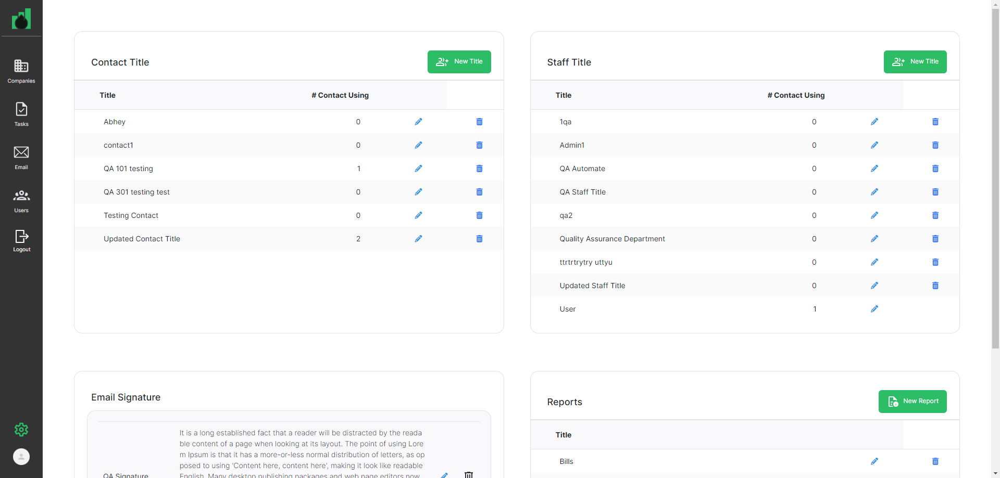FailSettings 13. User should see an validation message for signautre name field in the email signature widgetGiven User has already logged in to application for settingsusername password admin@ontrack.com Admin@12345 When user should be able to click on SettingsAnd click on add button in the email signature widgetAnd User should be clicked on add button in the email signature popup in the email signature widgetStep skippedThen User should see an validation message for signature name fieled in the email signature widget"Name can't be blank."Step skippedAppHooks.ApplicationHooks.tearDown(io.cucumber.java.Scenario)Settings_13._User_should_see_an_validation_message_for_signautre_name_field_in_the_email_signature_widget FailSettings 14. User should be able to add signature for email signature widgetGiven User has already logged in to application for settings
FailSettings 14. User should be able to add signature for email signature widgetGiven User has already logged in to application for settingsusername password admin@ontrack.com Admin@12345 When user should be able to click on SettingsAnd click on add button in the email signature widgetAnd User should be able to add signature for email signature widget"Automate Email Signature","Automate Message"Step skippedThen user should be able to see signature in the email signaturewidget"Automate Email Signature"Step skippedAppHooks.ApplicationHooks.tearDown(io.cucumber.java.Scenario)Settings_14._User_should_be_able_to_add_signature_for_email_signature_widgetFailSettings 15. User should be able to edit signature for email signature widgetGiven User has already logged in to application for settingsusername password admin@ontrack.com Admin@12345 When user should be able to click on SettingsAnd click on edit button in the email signature widgetAnd User should be able to update signature for email signature widget"Automate Signature","Automate New Message"Then user should be able to see updated signature in the email signaturewidget"Automate Signature","Automate New Message"Step skippedAppHooks.ApplicationHooks.tearDown(io.cucumber.java.Scenario)Settings_15._User_should_be_able_to_edit_signature_for_email_signature_widget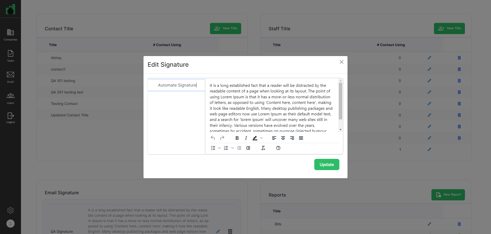PassSettings 16. User should be able to delete signature for email signature widgetGiven User has already logged in to application for settingsusername password admin@ontrack.com Admin@12345 When user should be able to click on SettingsThen User should be able to delete signature for email signature widgetPassSettings 17. User should see an validation message for Title field in the Reports widgetGiven User has already logged in to application for settingsusername password admin@ontrack.com Admin@12345 When user should be able to click on SettingsAnd click on add button in the Reports widgetAnd User should be clicked on add button in the title popup in the Reports widgetThen User should see an validation message for Title field in the Reports widget"Title can't be blank."PassSettings 18. User should be able to close add title popup for reports widgetGiven User has already logged in to application for settingsusername password admin@ontrack.com Admin@12345 When user should be able to click on SettingsAnd click on add button in the Reports widgetAnd User should be able to close add title popup for reports widgetThen close add title popup for reports widget successfully"Reports"PassSetting 19. Validate user should be able to add report for Reports widgetGiven User has already logged in to application for settingsusername password admin@ontrack.com Admin@12345 When user should be able to click on SettingsAnd user should be able to click on new report button in report widgetAnd user should enter the title in add report popup of report widget"Automate Report"Then user should be able to see the title on report widget"Automate Report"PassSettings 20. User should be able to edit title for Reports widgetGiven User has already logged in to application for settingsusername password admin@ontrack.com Admin@12345 When user should be able to click on SettingsAnd User should be able to edit title for Reports widget"Auto Report"Then user should be able to see report title in the reports widget"Auto Report"PassSettings 21. User should be able to delete report for report widgetGiven User has already logged in to application for settingsusername password admin@ontrack.com Admin@12345 When user should be able to click on SettingsAnd User should be able to delete report for report widgetThen user should be able to delete report successfully"Report was successfully deleted." -
Tasks Page Functionality
10:03:18 pm / 00:18:14:475 Fail
Tasks Page Functionality
02.21.2024 10:03:18 pm 02.21.2024 10:21:32 pm 00:18:14:475 · #test-id=2,665PassTasks 1. validate at user is on Tasks page urlGiven User has already logged in to application for the tasks pageusername password admin@ontrack.com Admin@12345 And User is on Companies page url "https://beta.cisin.com:4991/" for the tasks pageWhen user should be click on Tasks at sidebar menuThen "https://beta.cisin.com:4991/tasks" user should be on Task page urlPassTasks 2. Validate that user is on Template page of Task ModuleGiven User has already logged in to application for the tasks pageusername password admin@ontrack.com Admin@12345 And User is on Companies page url "https://beta.cisin.com:4991/" for the tasks pageWhen user should be click on Tasks at sidebar menuAnd user should be click on tasks template tabThen "https://beta.cisin.com:4991/task_templates" user should be on Template page of task module urlPassTask 3. Validate that user is able to Create Template at Template page of task moduleGiven User has already logged in to application for the tasks pageusername password admin@ontrack.com Admin@12345 And User is on Companies page url "https://beta.cisin.com:4991/" for the tasks pageWhen user should be click on Tasks at sidebar menuAnd user should be click on tasks template tabAnd user should be click on create template buttonAnd user should be enter the "QA Automation Template" in the name field at add task template pop upAnd user should be click on add button of task template popupThen user should be able to see the template "Qa automation template" at template pageAnd user should be able to see valdation message of created template"Task Template was created successfully."PassTasks 4. Validate that user is able to create the section inside the templateGiven User has already logged in to application for the tasks pageusername password admin@ontrack.com Admin@12345 And User is on Companies page url "https://beta.cisin.com:4991/" for the tasks pageWhen user should be click on Tasks at sidebar menuAnd user should be click on tasks template tabAnd user should click on QA Automation Template linkAnd user should click on add section buttonAnd user should be enter the "QA One" in the name field at add section pop upAnd user should be click on add button of create section popupThen user should be able to see the section "QA One" inside the created template pagePassTasks 5. user should be able to add sub task in the task pageGiven User has already logged in to application for the tasks pageusername password admin@ontrack.com Admin@12345 And User is on Companies page url "https://beta.cisin.com:4991/" for the tasks pageWhen user should be click on Tasks at sidebar menuAnd user should be click on tasks template tabAnd user should be able to click on task template in the tasks pageAnd user should be able to add sub task in the task page"TASK01-01"Then user should be able to see subtask in a task on task page"TASK01-01"And user should be able to create sub task successfuly"Sub Task was successfully created."PassTasks 6. user should be edit subtask of the task in the task pageGiven User has already logged in to application for the tasks pageusername password admin@ontrack.com Admin@12345 And User is on Companies page url "https://beta.cisin.com:4991/" for the tasks pageWhen user should be click on Tasks at sidebar menuAnd user should be click on tasks template tabAnd user should be able to click on task template in the tasks pageAnd user should be able to edit sub task in the task page"TASK01-00"Then user should be able to see update subtask in a task on task page"TASK01-00"PassTasks 7. user should be delete subtask of the task in the task pageGiven User has already logged in to application for the tasks pageusername password admin@ontrack.com Admin@12345 And User is on Companies page url "https://beta.cisin.com:4991/" for the tasks pageWhen user should be click on Tasks at sidebar menuAnd user should be click on tasks template tabAnd user should be able to click on task template in the tasks pageAnd user should be able to delete sub task in the task pageThen user should able delete subtask successfully"Sub Task was successfully deleted."PassTasks 8. user should be able to update section in the task pageGiven User has already logged in to application for the tasks pageusername password admin@ontrack.com Admin@12345 And User is on Companies page url "https://beta.cisin.com:4991/" for the tasks pageWhen user should be click on Tasks at sidebar menuAnd user should be click on tasks template tabAnd user should be able to click on task template in the tasks pageAnd user should be able to edit section"QA Two"Then user shoule be able to update section successfully"QA Two"PassTasks 9. user should be able to delete section in the task pageGiven User has already logged in to application for the tasks pageusername password admin@ontrack.com Admin@12345 And User is on Companies page url "https://beta.cisin.com:4991/" for the tasks pageWhen user should be click on Tasks at sidebar menuAnd user should be click on tasks template tabAnd user should be able to click on task template in the tasks pageAnd user should be able to delete sectionThen user shoule be able to delete section successfully"Section was successfully deleted."PassTasks 10. Validate that user is able to Delete the template from delete button which is inside the templateGiven User has already logged in to application for the tasks pageusername password admin@ontrack.com Admin@12345 And User is on Companies page url "https://beta.cisin.com:4991/" for the tasks pageWhen user should be click on Tasks at sidebar menuAnd user should be click on tasks template tabAnd user should click on QA Automation Template linkAnd user should click on delete button at the QA Automation Template Page to delete the templateThen user should able to delete QA Automation Template Successfully"Task Template was deleted successfully."PassTasks 11. validate at user is on tasks reocurring pageGiven User has already logged in to application for the tasks pageusername password admin@ontrack.com Admin@12345 And User is on Companies page url "https://beta.cisin.com:4991/" for the tasks pageWhen user should be click on Tasks at sidebar menuAnd user should be able to click on tasks reoccurring tabThen "https://beta.cisin.com:4991/recurring_task_index" user should be on Task reoccuring page urlPassTasks 12. user should be able to see add task popup in the tasks reoccuring pageGiven User has already logged in to application for the tasks pageusername password admin@ontrack.com Admin@12345 And User is on Companies page url "https://beta.cisin.com:4991/" for the tasks pageWhen user should be click on Tasks at sidebar menuAnd user should be able to click on tasks reoccurring tabAnd user should be able to click on add task button in the tasks reoccuring pageThen user should be able to see add task popup in the tasks reoccuring pagePassTasks 13. User should see an validation message on task name field at the add task popupGiven User has already logged in to application for the tasks pageusername password admin@ontrack.com Admin@12345 And User is on Companies page url "https://beta.cisin.com:4991/" for the tasks pageWhen user should be click on Tasks at sidebar menuAnd user should be able to click on tasks reoccurring tabAnd user should be able to click on add task button in the tasks reoccuring pageAnd user should be able to click on add button at add task popupThen User should see an validation message on task name field "Task name can't be blank."PassTasks 14. User should see an validation message on Asigned To field at the add task popupGiven User has already logged in to application for the tasks pageusername password admin@ontrack.com Admin@12345 And User is on Companies page url "https://beta.cisin.com:4991/" for the tasks pageWhen user should be click on Tasks at sidebar menuAnd user should be able to click on tasks reoccurring tabAnd user should be able to click on add task button in the tasks reoccuring pageAnd user should be able to click on add button at add task popupThen User should see an validation message on Asigned To field "Assigned to can't be blank"PassTasks 15. User should see an validation message on client field at the add task popupGiven User has already logged in to application for the tasks pageusername password admin@ontrack.com Admin@12345 And User is on Companies page url "https://beta.cisin.com:4991/" for the tasks pageWhen user should be click on Tasks at sidebar menuAnd user should be able to click on tasks reoccurring tabAnd user should be able to click on add task button in the tasks reoccuring pageAnd user should be able to click on add button at add task popupThen User should see an validation message on client field "Client must exist"PassTasks 16. User should see an validation message on start date field at the add task popupGiven User has already logged in to application for the tasks pageusername password admin@ontrack.com Admin@12345 And User is on Companies page url "https://beta.cisin.com:4991/" for the tasks pageWhen user should be click on Tasks at sidebar menuAnd user should be able to click on tasks reoccurring tabAnd user should be able to click on add task button in the tasks reoccuring pageAnd user should be able to click on add button at add task popupThen User should see an validation message on start date field "Start date can't be blank."PassTasks 17. User should be able to close add task popup in the tasks reocurring pageGiven User has already logged in to application for the tasks pageusername password admin@ontrack.com Admin@12345 And User is on Companies page url "https://beta.cisin.com:4991/" for the tasks pageWhen user should be click on Tasks at sidebar menuAnd user should be able to click on tasks reoccurring tabAnd user should be able to click on add task button in the tasks reoccuring pageAnd user should be able to click on close icon at add task popupThen user should be able to close add task popup successfully in the tasks reocurring pagePassTasks 18. user should be able to see the company in the task reocurring tab after adding company in the user at the user page.Given User has already logged in to application for the tasks pageusername password admin@ontrack.com Admin@12345 And User is on Companies page url "https://beta.cisin.com:4991/" for the tasks pageWhen user should be click on Users at sidebar menu for the task pageAnd user is able to add company in the user contact page for the task page"Test Company"And user should be click on Tasks at sidebar menuAnd user should be able to click on tasks reoccurring tabThen user should be able to see the company in the task reocurring tab after add company in the user at the user page."Test Company"PassTasks 19. User should be able to search company in the tasks reocurring pageGiven User has already logged in to application for the tasks pageusername password admin@ontrack.com Admin@12345 And User is on Companies page url "https://beta.cisin.com:4991/" for the tasks pageWhen user should be click on Tasks at sidebar menuAnd user should be able to click on tasks reoccurring tabAnd user should be able to search company in the tasks reocurring page"Test Company"Then user should be able to see the company in the tasks reocurring page"Test Company"PassTasks 20. Validate that user is able to Create Template at Template page of task moduleGiven User has already logged in to application for the tasks pageusername password admin@ontrack.com Admin@12345 And User is on Companies page url "https://beta.cisin.com:4991/" for the tasks pageWhen user should be click on Tasks at sidebar menuAnd user should be click on tasks template tabAnd user should be click on create template buttonAnd user should be enter the "Qa automation template" in the name field at add task template pop upAnd user should be click on add button of task template popupThen user should be able to see the template "Qa automation template" at template pageAnd user should be able to see valdation message of created template"Task Template was created successfully."PassTasks 21. User should be able to create task in the tasks reocurring pageGiven User has already logged in to application for the tasks pageusername password admin@ontrack.com Admin@12345 And User is on Companies page url "https://beta.cisin.com:4991/" for the tasks pageWhen user should be click on Tasks at sidebar menuAnd user should be able to click on tasks reoccurring tabAnd user should be able to click on add task button in the tasks reoccuring pageAnd user should be enter all fields of add task popuptask template taskname assign client repeattask date Qa automation template Important Work Test admin Test Company 1 February 29, 2024 Then user should see the task in the company of tasks reoccuring page"Important Work"PassTasks 22. User should be able to redirect to recurring tab in the company task tabGiven User has already logged in to application for the tasks pageusername password admin@ontrack.com Admin@12345 And User is on Companies page url "https://beta.cisin.com:4991/" for the tasks pageWhen user should be click on Tasks at sidebar menuAnd user should be able to click on tasks reoccurring tabAnd user should be able to click on task of the company at tasks reoccurring page Important TaskThen user should be see the company name in the company task pagePassTasks 23. User should be able to update fields at recurring tab in the company task tabGiven User has already logged in to application for the tasks pageusername password admin@ontrack.com Admin@12345 And User is on Companies page url "https://beta.cisin.com:4991/" for the tasks pageWhen user should be click on Tasks at sidebar menuAnd user should be able to click on tasks reoccurring tabAnd user should be able to click on task of the company at tasks reoccurring page Important TaskAnd User should be able to update fields at recurring tab in the company task tabtaskname template date Very Important Work Qa automation template February 28, 2024 Then user should be able to see the task recurring tab in the company task tab"Very Important Work"And user should be able to update recurring task successfully"Task was successfully updated."PassTasks 24. User should be able to search task by filter at recurring tab in the company task tabGiven User has already logged in to application for the tasks pageusername password admin@ontrack.com Admin@12345 And User is on Companies page url "https://beta.cisin.com:4991/" for the tasks pageWhen user should be click on Tasks at sidebar menuAnd user should be able to click on tasks reoccurring tabAnd user should be able to click on add task button in the tasks reoccuring pageAnd user should be enter all fields of add task popup for filtertask template taskname assign client repeattask date Qa automation template Important Work Test admin Test Company 1 February 29, 2024 And user should be able to click on task of the company at tasks reoccurring page Important TaskAnd user should be able to clcik on task reoccurring tab at company task tabAnd User should be able to search task by filter at recurring tab in the company task tabtaskname assign Important Work Test admin Then user should be able to see the filtered task in the task of the company at tasks reoccurring pagePass25. User should be able to edit fields at recurring tab in the company task tabGiven User has already logged in to application for the tasks pageusername password admin@ontrack.com Admin@12345 And User is on Companies page url "https://beta.cisin.com:4991/" for the tasks pageWhen user should be click on Tasks at sidebar menuAnd user should be able to click on tasks reoccurring tabAnd user should be able to click on task of the company at tasks reoccurring page Important TaskAnd user should be able to clcik on task reoccurring tab at company task tabAnd User should be able to edit fields in the edit task popup at recurring tab in the company task tab"Very very Important Work"Then user should be able to see the updated task in the task of the company at tasks reoccurring pagePass26. User should be able to delete task at recurring tab in the company task tabGiven User has already logged in to application for the tasks pageusername password admin@ontrack.com Admin@12345 And User is on Companies page url "https://beta.cisin.com:4991/" for the tasks pageWhen user should be click on Tasks at sidebar menuAnd user should be able to click on tasks reoccurring tabAnd user should be able to click on task of the company at tasks reoccurring page Important TaskAnd user should be able to clcik on task reoccurring tab at company task tabAnd User should be able to delete task at recurring tab in the company task tabFail27. user should be able to create task in the compnay task pageGiven User has already logged in to application for the tasks pageusername password admin@ontrack.com Admin@12345 And User is on Companies page url "https://beta.cisin.com:4991/" for the tasks pageWhen user should be able to select company in the company page for the task pageAnd user should be on tasks page for the task pageAnd user should be click on Add tasks button in the tasks page for the task pageAnd user should be able to create task in the tasks page for the task pagetask template name assign company taskrepeat date Qa automation template Task12 Testing 201 Test Company 1 February 15, 2024 Then user should be see the task in the tasks page for the task page"Task12"Step skippedAppHooks.ApplicationHooks.tearDown(io.cucumber.java.Scenario)27._user_should_be_able_to_create_task_in_the_compnay_task_page Fail28. user should be able to see users today task at My task tabGiven User has already logged in to application for the tasks page
Fail28. user should be able to see users today task at My task tabGiven User has already logged in to application for the tasks pageusername password admin@ontrack.com Admin@12345 And User is on Companies page url "https://beta.cisin.com:4991/" for the tasks pageWhen user should be click on Tasks at sidebar menuAnd user should be click on my task tabAnd user should be able to select assign user at my task tab"Testing 201"Then user should be able to see users today task count at My task tab"1"Step skippedAppHooks.ApplicationHooks.tearDown(io.cucumber.java.Scenario)28._user_should_be_able_to_see_users_today_task_at_My_task_tab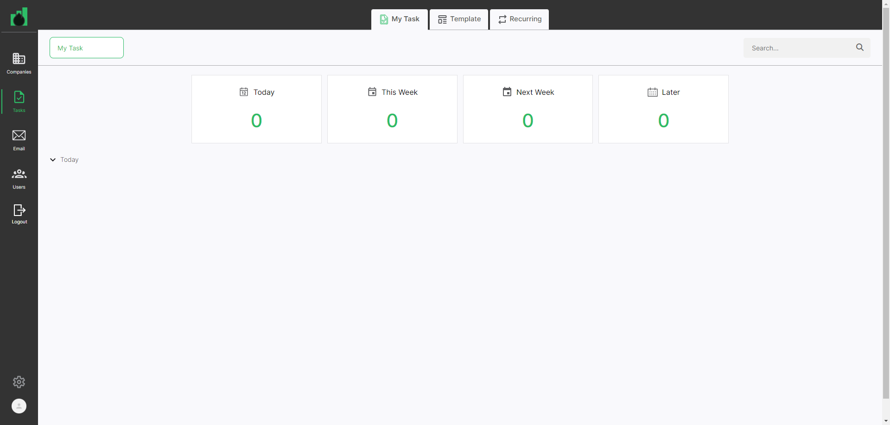Fail30. user should be able to see users today task count after the delete task at My task tabGiven User has already logged in to application for the tasks pageusername password admin@ontrack.com Admin@12345 And User is on Companies page url "https://beta.cisin.com:4991/" for the tasks pageWhen user should be able to select company in the company page for the task pageAnd user should be on tasks page for the task pageAnd user should be click on delete btn tasks button in the tasks for the task pageAnd user should be click on Tasks at sidebar menuStep skippedAnd user should be click on my task tabStep skippedAnd user should be able to select assign user at my task tab"Testing 201"Step skippedThen user should be able to see users today task count after the delete task at My task tab"0"Step skippedAppHooks.ApplicationHooks.tearDown(io.cucumber.java.Scenario)30._user_should_be_able_to_see_users_today_task_count_after_the_delete_task_at_My_task_tab Fail31. user should be able to create week task in the compnay task pageGiven User has already logged in to application for the tasks page
Fail31. user should be able to create week task in the compnay task pageGiven User has already logged in to application for the tasks pageusername password admin@ontrack.com Admin@12345 And User is on Companies page url "https://beta.cisin.com:4991/" for the tasks pageWhen user should be able to select company in the company page for the task pageAnd user should be on tasks page for the task pageAnd user should be click on Add tasks button in the tasks page for the task pageAnd user should be able to create task in the tasks page for the task pagetask template name assign company taskrepeat date Qa automation template Task12 Testing 201 Test Company 1 February 15, 2024 Then user should be see the task in the tasks page for the week task page"Task12"Step skippedAppHooks.ApplicationHooks.tearDown(io.cucumber.java.Scenario)31._user_should_be_able_to_create_week_task_in_the_compnay_task_pageFail32. user should be able to see users week task at My task tabGiven User has already logged in to application for the tasks pageusername password admin@ontrack.com Admin@12345 And User is on Companies page url "https://beta.cisin.com:4991/" for the tasks pageWhen user should be click on Tasks at sidebar menuAnd user should be click on my task tabAnd user should be able to select assign user at my task tab"Testing 201"Then user should be able to see users week task count at My task tab"1"Step skippedAppHooks.ApplicationHooks.tearDown(io.cucumber.java.Scenario)32._user_should_be_able_to_see_users_week_task_at_My_task_tabFail33. user should be able to see users week task count after the delete task at My task tabGiven User has already logged in to application for the tasks pageusername password admin@ontrack.com Admin@12345 And User is on Companies page url "https://beta.cisin.com:4991/" for the tasks pageWhen user should be able to select company in the company page for the task pageAnd user should be on tasks page for the task pageAnd user should be click on delete btn tasks button in the tasks for the task pageAnd user should be click on Tasks at sidebar menuStep skippedAnd user should be click on my task tabStep skippedAnd user should be able to select assign user at my task tab"Testing 201"Step skippedThen user should be able to see users week task count after the delete task at My task tab"0"Step skippedAppHooks.ApplicationHooks.tearDown(io.cucumber.java.Scenario)33._user_should_be_able_to_see_users_week_task_count_after_the_delete_task_at_My_task_tab Fail34. user should be able to create Next week task in the compnay task pageGiven User has already logged in to application for the tasks page
Fail34. user should be able to create Next week task in the compnay task pageGiven User has already logged in to application for the tasks pageusername password admin@ontrack.com Admin@12345 And User is on Companies page url "https://beta.cisin.com:4991/" for the tasks pageWhen user should be able to select company in the company page for the task pageAnd user should be on tasks page for the task pageAnd user should be click on Add tasks button in the tasks page for the task pageAnd user should be able to create task in the tasks page for the task pagetask template name assign company taskrepeat date Qa automation template Task12 Testing 201 Test Company 1 February 16, 2024 Then user should be see the task in the tasks page for the next week task page"Task12"Step skippedAppHooks.ApplicationHooks.tearDown(io.cucumber.java.Scenario)34._user_should_be_able_to_create_Next_week_task_in_the_compnay_task_page Fail35. user should be able to see users next week task at My task tabGiven User has already logged in to application for the tasks page
Fail35. user should be able to see users next week task at My task tabGiven User has already logged in to application for the tasks pageusername password admin@ontrack.com Admin@12345 And User is on Companies page url "https://beta.cisin.com:4991/" for the tasks pageWhen user should be click on Tasks at sidebar menuAnd user should be click on my task tabAnd user should be able to select assign user at my task tab"Testing 201"Then user should be able to see users next week task count at My task tab"1"Step skippedAppHooks.ApplicationHooks.tearDown(io.cucumber.java.Scenario)35._user_should_be_able_to_see_users_next_week_task_at_My_task_tab Fail36. user should be able to see users next week task count after the delete task at My task tabGiven User has already logged in to application for the tasks page
Fail36. user should be able to see users next week task count after the delete task at My task tabGiven User has already logged in to application for the tasks pageusername password admin@ontrack.com Admin@12345 And User is on Companies page url "https://beta.cisin.com:4991/" for the tasks pageWhen user should be able to select company in the company page for the task pageAnd user should be on tasks page for the task pageAnd user should be click on delete btn tasks button in the tasks for the task pageAnd user should be click on Tasks at sidebar menuStep skippedAnd user should be click on my task tabStep skippedAnd user should be able to select assign user at my task tab"Testing 201"Step skippedThen user should be able to see users next week task count after the delete task at My task tab"0"Step skippedAppHooks.ApplicationHooks.tearDown(io.cucumber.java.Scenario)36._user_should_be_able_to_see_users_next_week_task_count_after_the_delete_task_at_My_task_tab Fail37. user should be able to create later week task in the compnay task pageGiven User has already logged in to application for the tasks page
Fail37. user should be able to create later week task in the compnay task pageGiven User has already logged in to application for the tasks pageusername password admin@ontrack.com Admin@12345 And User is on Companies page url "https://beta.cisin.com:4991/" for the tasks pageWhen user should be able to select company in the company page for the task pageAnd user should be on tasks page for the task pageAnd user should be click on Add tasks button in the tasks page for the task pageAnd user should be able to create task in the tasks page for the task pagetask template name assign company taskrepeat date Qa automation template Task12 Testing 201 Test Company 1 February 25, 2024 Then user should be see the task in the tasks page for the later week task page"Task12"Step skippedAppHooks.ApplicationHooks.tearDown(io.cucumber.java.Scenario)37._user_should_be_able_to_create_later_week_task_in_the_compnay_task_page Fail38. user should be able to see users later week task at My task tabGiven User has already logged in to application for the tasks page
Fail38. user should be able to see users later week task at My task tabGiven User has already logged in to application for the tasks pageusername password admin@ontrack.com Admin@12345 And User is on Companies page url "https://beta.cisin.com:4991/" for the tasks pageWhen user should be click on Tasks at sidebar menuAnd user should be click on my task tabAnd user should be able to select assign user at my task tab"Testing 201"Then user should be able to see users later week task count at My task tab"1"Step skippedAppHooks.ApplicationHooks.tearDown(io.cucumber.java.Scenario)38._user_should_be_able_to_see_users_later_week_task_at_My_task_tab Fail39. user should be able to see users later week task count after the delete task at My task tabGiven User has already logged in to application for the tasks page
Fail39. user should be able to see users later week task count after the delete task at My task tabGiven User has already logged in to application for the tasks pageusername password admin@ontrack.com Admin@12345 And User is on Companies page url "https://beta.cisin.com:4991/" for the tasks pageWhen user should be able to select company in the company page for the task pageAnd user should be on tasks page for the task pageAnd user should be click on delete btn tasks button in the tasks for the task pageAnd user should be click on Tasks at sidebar menuStep skippedAnd user should be click on my task tabStep skippedAnd user should be able to select assign user at my task tab"Testing 201"Step skippedThen user should be able to see users later week task count after the delete task at My task tab"0"Step skippedAppHooks.ApplicationHooks.tearDown(io.cucumber.java.Scenario)39._user_should_be_able_to_see_users_later_week_task_count_after_the_delete_task_at_My_task_tab PassTasks 40. Validate that user is able to Delete the template from delete button which is inside the templateGiven User has already logged in to application for the tasks page
PassTasks 40. Validate that user is able to Delete the template from delete button which is inside the templateGiven User has already logged in to application for the tasks pageusername password admin@ontrack.com Admin@12345 And User is on Companies page url "https://beta.cisin.com:4991/" for the tasks pageWhen user should be click on Tasks at sidebar menuAnd user should be click on tasks template tabAnd user should click on QA Automation Template linkAnd user should click on delete button at the QA Automation Template Page to delete the templateThen user should able to delete QA Automation Template Successfully"Task Template was deleted successfully." -
Users Page Functionality
10:21:32 pm / 00:04:28:682 Fail
Users Page Functionality
02.21.2024 10:21:32 pm 02.21.2024 10:26:01 pm 00:04:28:682 · #test-id=3,140Pass1. validate that user is on Users page urlGiven User has already logged in to application for the users pageusername password admin@ontrack.com Admin@12345 When user should be click on Users at sidebar menuThen "https://beta.cisin.com:4991/user_roles/23" user should be on Users page urlFail2. Validate that user is able to edit the Users info SuccesfullyGiven User has already logged in to application for the users pageusername password admin@ontrack.com Admin@12345 When user should be click on Users at sidebar menuAnd user able to search the user "final check"And user should be click on final check userAnd user click on edit buttonStep skippedAnd user clear the filed and enter the updates values in the fieldsSelect a Title Email QA Automate admin7758@mailinator.com Step skippedAnd user click on update button at edit user popupStep skippedThen user should be able to see update email"admin7758@mailinator.com"Step skippedAppHooks.ApplicationHooks.tearDown(io.cucumber.java.Scenario)2._Validate_that_user_is_able_to_edit_the_Users_info_Succesfully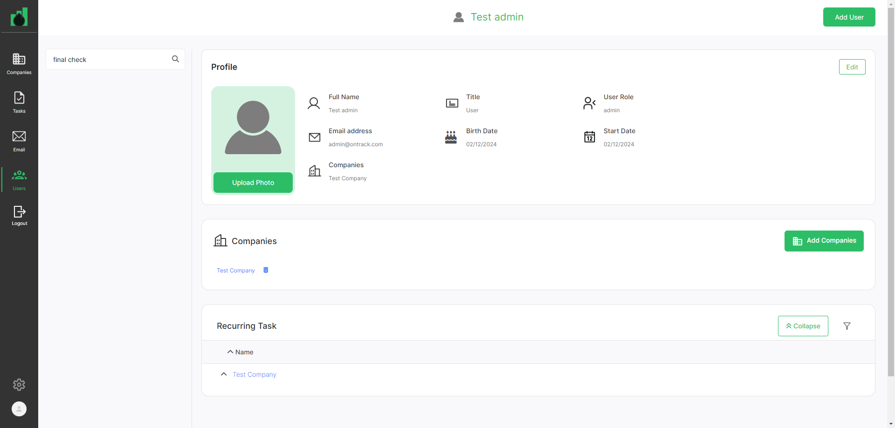Pass3. user is able to create company in the user contact pageGiven User has already logged in to application for the users pageusername password admin@ontrack.com Admin@12345 And user should be click on Users at sidebar menuAnd user able to search the user "Test admin"And user is able to add company in the user contact page"Test Company"Then user should be able to see the company in the user contact page"Test Company"Pass4. user should be able to delete company in the user pageGiven User has already logged in to application for the users pageusername password admin@ontrack.com Admin@12345 When user should be click on Users at sidebar menuAnd user able to search the user "Test admin"And user should be able to delete company in the user pagePass5. user should be able to add company in the user page.Given User has already logged in to application for the users pageusername password admin@ontrack.com Admin@12345 When user should be click on Users at sidebar menuAnd user able to search the user "Test admin"And user is able to add company in the user contact page for the task recurring"Test Company"Then user should be able to see the company in the user contact page for the task recurring"Test Company"Pass6. User should be able to create task in the tasks reocurring page for the user pageGiven User has already logged in to application for the users pageusername password admin@ontrack.com Admin@12345 When user should be click on Tasks at sidebar menu for the user pageAnd user should be able to click on tasks reoccurring tab for the user pageAnd user should be able to click on add task button in the tasks reoccuring page for the user pageAnd user should be enter all fields of add task popup for the user pagetask template taskname assign client repeattask date Qa template101 Important Work Test admin Test Company 1 February 29, 2024 Then user should see the task in the company of tasks reoccuring page for the page"Important Work"Fail7. user should be able to see the Recurring task in the user page.Given User has already logged in to application for the users pageusername password admin@ontrack.com Admin@12345 When user should be click on Users at sidebar menuAnd user should be able to click user in the user pageThen user should be able to see recurring task in the user page"Important Work"Step skippedAppHooks.ApplicationHooks.tearDown(io.cucumber.java.Scenario)7._user_should_be_able_to_see_the_Recurring_task_in_the_user_page.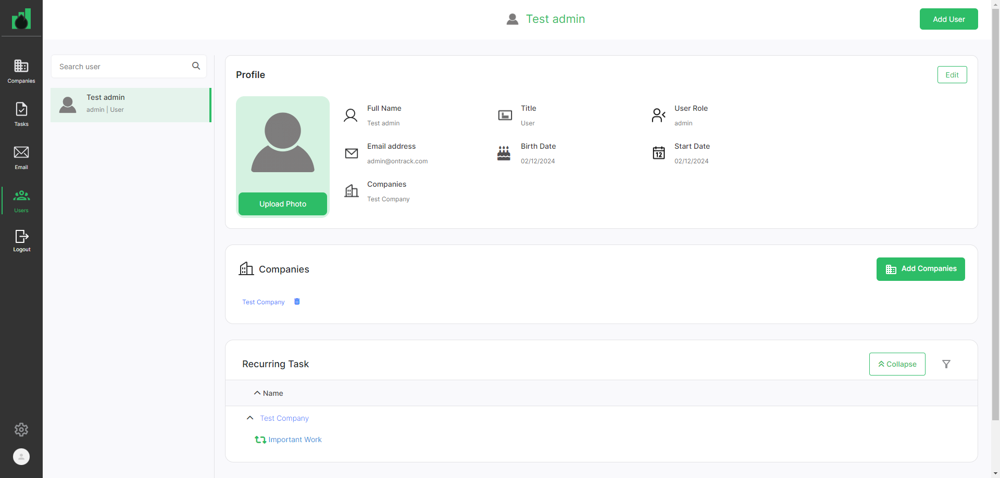Fail8. User should be able to update fields at recurring tab in the company task tab for the usersGiven User has already logged in to application for the users pageusername password admin@ontrack.com Admin@12345 When user should be click on Users at sidebar menuAnd user should be able to click user in the user pageAnd user should be able to click on task of the company at users page Important TaskStep skippedAnd User should be able to update fields at recurring tab in the company task tab for the userstaskname Very Important Work Step skippedThen user should be able to see the task recurring tab in the company task tab for the users"Very Important Work"Step skippedAppHooks.ApplicationHooks.tearDown(io.cucumber.java.Scenario)8._User_should_be_able_to_update_fields_at_recurring_tab_in_the__company_task_tab_for_the_users Fail9. User should be able to edit fields at recurring tab in the company task tab for the usersGiven User has already logged in to application for the users page
Fail9. User should be able to edit fields at recurring tab in the company task tab for the usersGiven User has already logged in to application for the users pageusername password admin@ontrack.com Admin@12345 When user should be click on Users at sidebar menuAnd user should be able to click user in the user pageAnd user should be able to click on task of the company at users page Important TaskStep skippedAnd user should be able to click on recurring tab of the task tabStep skippedAnd User should be able to edit fields in the edit task popup at recurring tab in the company task tab for the users"Very very Important Work"Step skippedThen user should be able to see the updated task in the task of the company at tasks reoccurring page for the users"Very very Important Work"Step skippedAppHooks.ApplicationHooks.tearDown(io.cucumber.java.Scenario)9._User_should_be_able_to_edit_fields_at_recurring_tab_in_the__company_task_tab_for_the_usersFail10. User should be able to delete task at recurring tab in the company task tab for the usersGiven User has already logged in to application for the users pageusername password admin@ontrack.com Admin@12345 When user should be click on Users at sidebar menuAnd user should be able to click user in the user pageAnd user should be able to click on task of the company at users page Important TaskStep skippedAnd user should be able to click on recurring tab of the task tabStep skippedAnd User should be able to delete task at recurring tab in the company task tab for the usersStep skippedAppHooks.ApplicationHooks.tearDown(io.cucumber.java.Scenario)10._User_should_be_able_to_delete_task_at_recurring_tab_in_the__company_task_tab_for_the_users Pass11. user should be able to delete the company in the company pageGiven User has already logged in to application for the users page
Pass11. user should be able to delete the company in the company pageGiven User has already logged in to application for the users pageusername password admin@ontrack.com Admin@12345 When user should be able to delete the company in the company pageThen user should be able to delete compnay successfully"Company was successfully deleted."Pass12. vlaidate user should be logout the applicationGiven User has already logged in to application for the users pageusername password admin@ontrack.com Admin@12345 When user should be logout the application
-
org.openqa.selenium.NoSuchElementException
53 tests
org.openqa.selenium.NoSuchElementException
53 failedStatus Timestamp TestName Fail 21:28:02 pm And user should be able add staff details"Testing 201" Companies Page Functionality.141. user should be able add staff member.And user should be able add staff details"Testing 201"Fail 21:28:54 pm And user should be click on edit button staff member section Companies Page Functionality.142. user should be able edit staff member.And user should be click on edit button staff member sectionFail 21:29:24 pm And user able to delete staff member details Companies Page Functionality.143. user should be able delete staff member details.And user able to delete staff member detailsFail 21:33:16 pm And user should be able to create task in the tasks page Companies Page Functionality.160. user should be able to create task in the compnay task page.And user should be able to create task in the tasks pageFail 21:34:09 pm And user should be able to click on task in the tasks page Companies Page Functionality.161. user should be on task page.And user should be able to click on task in the tasks pageFail 21:34:42 pm And user should be able to click on task in the tasks page Companies Page Functionality.162. validate user should be able to see company details on detail tab.And user should be able to click on task in the tasks pageFail 21:35:15 pm And user should be able to click on task in the tasks page Companies Page Functionality.163. validate user should be able to see user details on detail tab.And user should be able to click on task in the tasks pageFail 21:35:46 pm And user should be able add staff details"Testing 201" Companies Page Functionality.164. user should be able to add staff member for the notes in the Task tab.And user should be able add staff details"Testing 201"Fail 21:36:40 pm And user should be able to click on task in the tasks page Companies Page Functionality.165. user should be able to add notes in the task tab.And user should be able to click on task in the tasks pageFail 21:37:13 pm And user should be able to click on task in the tasks page Companies Page Functionality.166. user should be able to add coachings in the notes of Task tab.And user should be able to click on task in the tasks pageFail 21:37:47 pm And user should be able to click on task in the tasks page Companies Page Functionality.167. user should be able to add sections in the task page.And user should be able to click on task in the tasks pageFail 21:38:18 pm And user should be able to click on task in the tasks page Companies Page Functionality.168. User should be create subtask of task in the task page.And user should be able to click on task in the tasks pageFail 21:38:51 pm And user should be able to click on task in the tasks page Companies Page Functionality.169. User should be able to see completed task in the task page.And user should be able to click on task in the tasks pageFail 21:39:23 pm And User should be delete task at complete task in the tasks page Companies Page Functionality.170. User should be delete task at complete task in the tasks page.And User should be delete task at complete task in the tasks pageFail 21:39:59 pm And user should be able to create task in the tasks page Companies Page Functionality.171. user should be able to create task in the compnay task page.And user should be able to create task in the tasks pageFail 21:41:02 pm And user should be click on delete btn tasks button in the tasks page Companies Page Functionality.173. User should be delete task in the tasks page.And user should be click on delete btn tasks button in the tasks pageFail 21:41:43 pm And user should be click on delete btn in task recurring tab in the tasks page Companies Page Functionality.175. User should be delete task in task recurring tab in the tasks page.And user should be click on delete btn in task recurring tab in the tasks pageFail 21:42:26 pm And user should be click on edit button on task recurring tab Companies Page Functionality.177. user should be able to update task in the compnay task page.And user should be click on edit button on task recurring tabFail 21:43:08 pm And user should be able to click on task of the company at tasks reoccurring page Task20 Companies Page Functionality.179. User should be able to update fields at recurring tab in the company task tab.And user should be able to click on task of the company at tasks reoccurring page Task20Fail 21:43:39 pm And user should be click on delete btn in task recurring tab in the tasks page Companies Page Functionality.180. User should be delete task in task recurring tab in the tasks page.And user should be click on delete btn in task recurring tab in the tasks pageFail 21:45:26 pm And user should be able to create notes in the company notes page Companies Page Functionality.187. user should be able to create notes in the company notes page.And user should be able to create notes in the company notes pageFail 21:46:18 pm And user should be able to reply the notes in the company notes page Companies Page Functionality.188. validate user should be able to reply the notes in the company notes page.And user should be able to reply the notes in the company notes pageFail 21:46:49 pm And user should be able to edit reply the notes in the company notes page Companies Page Functionality.189. validate user should be able to edit reply notes in the company notes page.And user should be able to edit reply the notes in the company notes pageFail 21:47:21 pm And user should be able to delete reply the notes in the company notes page Companies Page Functionality.190. validate user should be able to delete reply notes in the company notes page.And user should be able to delete reply the notes in the company notes pageFail 21:47:54 pm And user should be able to create coaching notes in the company notes page Companies Page Functionality.191. user should be able to create Coaching notes in the company notes page.And user should be able to create coaching notes in the company notes pageFail 21:48:59 pm And user should be able to reply the notes of coaching tab in the company notes page Companies Page Functionality.193. validate user should be able to reply the notes of coaching tab in the company notes page.And user should be able to reply the notes of coaching tab in the company notes pageFail 21:49:29 pm And user should be able to edit reply the notes Coaching in the company notes page Companies Page Functionality.194. validate user should be able to edit reply notes coaching in the company notes page.And user should be able to edit reply the notes Coaching in the company notes pageFail 21:50:00 pm And user should be able to delete reply the notes coaching in the company notes page Companies Page Functionality.195. validate user should be able to delete reply notes in the company notes page.And user should be able to delete reply the notes coaching in the company notes pageFail 21:50:32 pm Then user should be able to see search notes at company notes page Companies Page Functionality.196. user should be able to search notes at company notes page.Then user should be able to see search notes at company notes pageFail 21:51:03 pm And user should be able to search notes by filter at company notes page Companies Page Functionality.197. user should be able to search notes by filter at company notes page.And user should be able to search notes by filter at company notes pageFail 21:51:25 pm And user able to delete staff member details Companies Page Functionality.199. user should be able delete staff member details.And user able to delete staff member detailsFail 21:56:41 pm Then User should see an validation message for Phone Number Name for contact"Phone number can't be blank." Contact Page Functionality.Contact 14. User should see an validation message for Phone Number Name.Then User should see an validation message for Phone Number Name for contact"Phone number can't be blank."Fail 22:00:16 pm And click on add button in the email signature widget Settings Page Functionality.Settings 12. User should be able to close add signature popup for email signature widget.And click on add button in the email signature widgetFail 22:00:52 pm And click on add button in the email signature widget Settings Page Functionality.Settings 13. User should see an validation message for signautre name field in the email signature widget.And click on add button in the email signature widgetFail 22:01:28 pm And click on add button in the email signature widget Settings Page Functionality.Settings 14. User should be able to add signature for email signature widget.And click on add button in the email signature widgetFail 22:02:04 pm And User should be able to update signature for email signature widget"Automate Signature","Automate New Message" Settings Page Functionality.Settings 15. User should be able to edit signature for email signature widget.And User should be able to update signature for email signature widget"Automate Signature","Automate New Message"Fail 22:09:10 pm And user should be able to create task in the tasks page for the task page Tasks Page Functionality.27. user should be able to create task in the compnay task page.And user should be able to create task in the tasks page for the task pageFail 22:10:22 pm And user should be able to select assign user at my task tab"Testing 201" Tasks Page Functionality.28. user should be able to see users today task at My task tab.And user should be able to select assign user at my task tab"Testing 201"Fail 22:11:35 pm And user should be click on delete btn tasks button in the tasks for the task page Tasks Page Functionality.30. user should be able to see users today task count after the delete task at My task tab.And user should be click on delete btn tasks button in the tasks for the task pageFail 22:12:15 pm And user should be able to create task in the tasks page for the task page Tasks Page Functionality.31. user should be able to create week task in the compnay task page.And user should be able to create task in the tasks page for the task pageFail 22:13:27 pm And user should be able to select assign user at my task tab"Testing 201" Tasks Page Functionality.32. user should be able to see users week task at My task tab.And user should be able to select assign user at my task tab"Testing 201"Fail 22:14:40 pm And user should be click on delete btn tasks button in the tasks for the task page Tasks Page Functionality.33. user should be able to see users week task count after the delete task at My task tab.And user should be click on delete btn tasks button in the tasks for the task pageFail 22:15:20 pm And user should be able to create task in the tasks page for the task page Tasks Page Functionality.34. user should be able to create Next week task in the compnay task page.And user should be able to create task in the tasks page for the task pageFail 22:16:32 pm And user should be able to select assign user at my task tab"Testing 201" Tasks Page Functionality.35. user should be able to see users next week task at My task tab.And user should be able to select assign user at my task tab"Testing 201"Fail 22:17:46 pm And user should be click on delete btn tasks button in the tasks for the task page Tasks Page Functionality.36. user should be able to see users next week task count after the delete task at My task tab.And user should be click on delete btn tasks button in the tasks for the task pageFail 22:18:25 pm And user should be able to create task in the tasks page for the task page Tasks Page Functionality.37. user should be able to create later week task in the compnay task page.And user should be able to create task in the tasks page for the task pageFail 22:19:37 pm And user should be able to select assign user at my task tab"Testing 201" Tasks Page Functionality.38. user should be able to see users later week task at My task tab.And user should be able to select assign user at my task tab"Testing 201"Fail 22:20:49 pm And user should be click on delete btn tasks button in the tasks for the task page Tasks Page Functionality.39. user should be able to see users later week task count after the delete task at My task tab.And user should be click on delete btn tasks button in the tasks for the task pageFail 22:21:49 pm And user should be click on final check user Users Page Functionality.2. Validate that user is able to edit the Users info Succesfully.And user should be click on final check userFail 22:23:22 pm And user should be able to click user in the user page Users Page Functionality.7. user should be able to see the Recurring task in the user page..And user should be able to click user in the user pageFail 22:24:00 pm And user should be able to click user in the user page Users Page Functionality.8. User should be able to update fields at recurring tab in the company task tab for the users.And user should be able to click user in the user pageFail 22:24:38 pm And user should be able to click user in the user page Users Page Functionality.9. User should be able to edit fields at recurring tab in the company task tab for the users.And user should be able to click user in the user pageFail 22:25:16 pm And user should be able to click user in the user page Users Page Functionality.10. User should be able to delete task at recurring tab in the company task tab for the users.And user should be able to click user in the user page -
java.lang.AssertionError
3 tests
java.lang.AssertionError
3 failedStatus Timestamp TestName Fail 21:40:52 pm Then user should be should open task widget count"1" Companies Page Functionality.172. user should be able to create task in the tasks page.Then user should be should open task widget count"1"Fail 21:42:57 pm Then user should be should recurring task widget count"2" Companies Page Functionality.178. user should be able to create task in the tasks page.Then user should be should recurring task widget count"2"Fail 21:44:09 pm Then user should be should recurring task widget count"1" Companies Page Functionality.181. user should be able to create task in the tasks page.Then user should be should recurring task widget count"1" -
org.openqa.selenium.StaleElementReferenceException
1 tests
org.openqa.selenium.StaleElementReferenceException
1 failedStatus Timestamp TestName Fail 21:42:14 pm And user should be click on Add tasks button at recurring tab in the tasks page Companies Page Functionality.176. user should be able to create task in the compnay task page.And user should be click on Add tasks button at recurring tab in the tasks page
Started
Feb 21, 2024 08:59:37 pm
Ended
Feb 21, 2024 10:26:01 pm
Features Passed
1
Features Failed
5
Features
Scenarios
Steps
Timeline